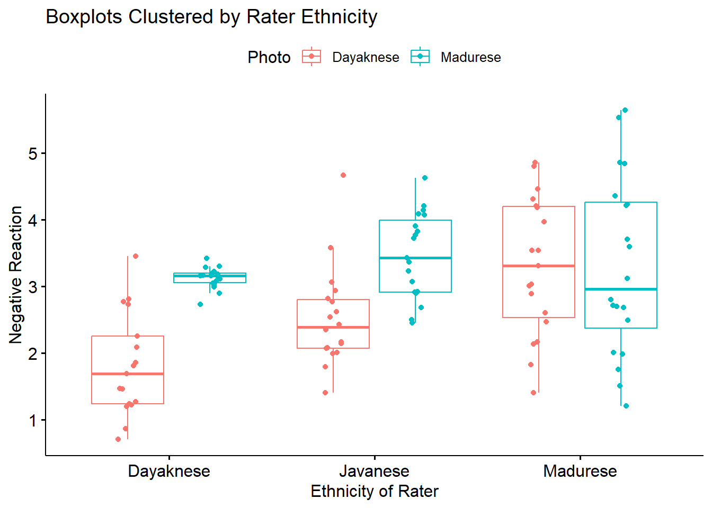
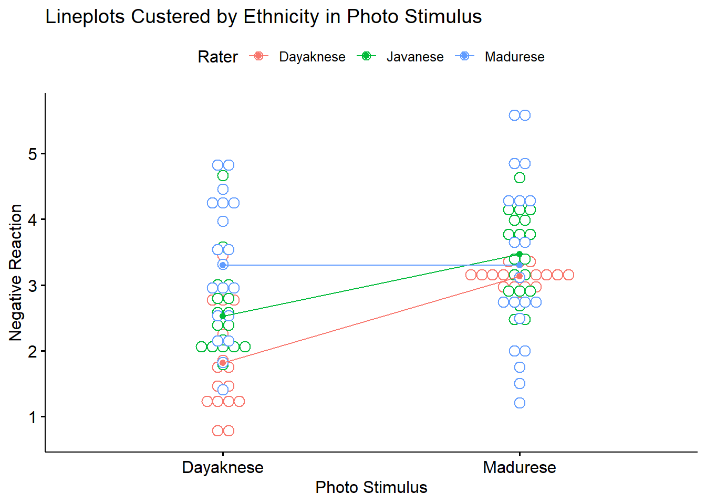
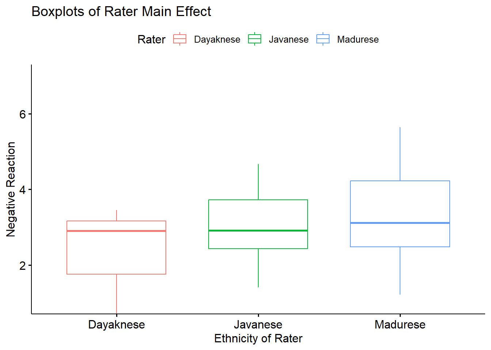
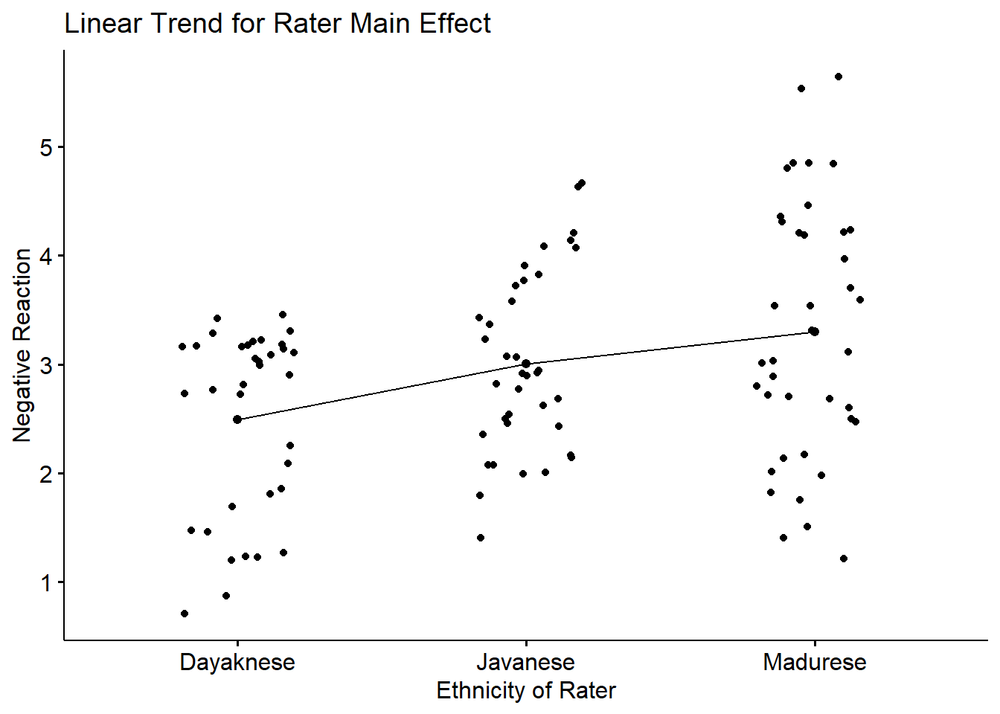
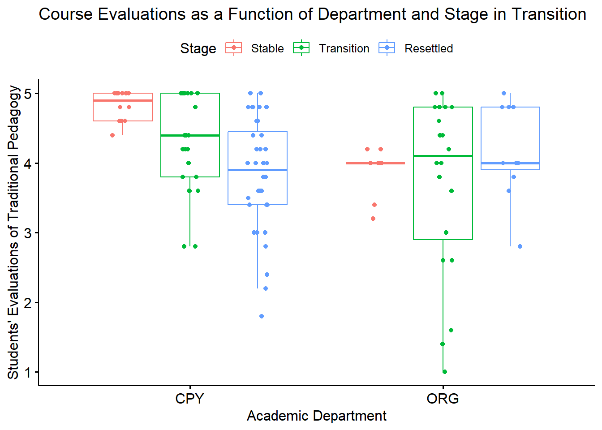
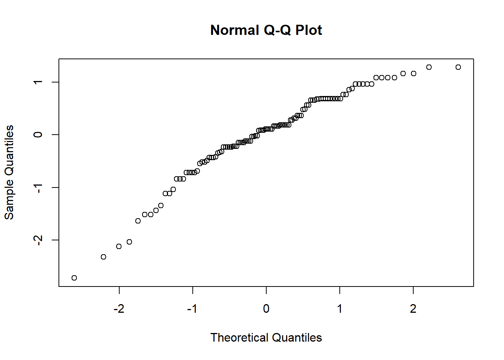

Chapter 8 Factorial (Between-Subjects) ANOVA
In this (somewhat long and complex) lesson we conduct a 3X2 ANOVA. We will
- Work an actual example from the literature.
- “by hand”, and
- with R packages
- I will also demonstrate
- several options for exploring interaction effects, and
- several options for exploring main effects.
- Exploring these options will allow us to:
- Gain familiarity with the concepts central to multi-factor ANOVAs.
- Explore tools for analyzing the complexity in designs.
The complexity is that not all of these things need to be conducted for every analysis. The two-way ANOVA Workflow is provided to help you map a way through your own analyses. I will periodically refer to this map so that we can more easily keep track of where we are in the process.
8.2 Introducing Factorial ANOVA
My approach to teaching is to address the conceptual as we work problems. That said, there are some critical ideas we should address first.
ANOVA is for experiments (or arguably closely related designs). As we learn about the assumptions you’ll see that ANOVA has some rather restrictive ones (e.g., there should be an equal/equivalent number of cases per cell). To the degree that we violate these assumptions, we should locate alternative statistical approaches where these assumptions are relaxed.
Factorial: a term used when there are two or more independent variables (IVs; the factors). The factors could be between-groups, within-groups, repeated measures, or a combination of between and within.
- Independent factorial design: several IVs (predictors/factors) and each has been measured using different participants (between groups).
- Related factorial design: several IVs (factors/predictors) have been measured, but the same participants have been used in all conditions (repeated measures or within-subjects).
- Mixed design: several IVs (factors/predictors) have been measured. One or more factors uses different participants (between-subjects) and one or more factors uses the same participants (within-subjects). Thus, there is a cobination of independent (between) and related (within or repated) designs.
“Naming” the ANOVA model follows a number/levels convention. The example in this lesson is a 3X2 ANOVA. We know there are two factors that have three and two levels, respectively:
- rater ethnicity has three levels representing the two ethnic groups that were in prior conflict (Marudese, Dayaknese) and a third group who was uninvolved in the conflict (Javanese);
- photo stimulus has two levels representing members of the two ethnic groups that were in prior conflict (Madurese, Dayaknese);
Moderator is what creates an interaction. Below are traditional representations of the statistical and conceptual figures of interaction effects. We will say that Factor B, moderates the relationship between Factor A (the IV) and the DV.
In a later lesson we work an ANCOVA – where we will distinguish between a moderator and a covariate. In lessons on regression models, you will likely be introduced to the notion of mediator.

8.2.1 Workflow for Two-Way ANOVA
The following is a proposed workflow for conducting a two-way ANOVA.

Steps of the workflow include:
- Enter data
- predictors should formatted as as factors (ordered or unordered); the dependent variable should be continuously scaled
- understanding the format of data can often provide clues as to which ANOVA/statistic to use
- Explore data
- graph the data
- compute descriptive statistics
- evaluate distributional assumptions
- assess the homogeneity of variance assumption with Levene’s test
- assess the nomality assumption with the Shapiro Wilk test
- determine if their are outliers; if appropriate, delete
- Compute the omnibus ANOVA
- depending on what you found in the data exploration phase, you may need to run a robust version of the test
- Follow-up testing based on significant main or interaction effects
- significant interactions require test of simple main effects which could be further explored with contrasts, posthoc comparisons, and/or polynomials
- the exact methods you choose will depend upon the tests of assumptions during data exploration
- Managing Type I error
8.3 Research Vignette
The research vignette for this example was located in Kalimantan, Indonesia and focused on bias in young people from three ethnic groups. The Madurese and Dayaknese groups were engaged in ethnic conflict that spanned 1996 to 2001. The last incidence of mass violence was in 2001 where approximately 500 people (mostly from the Madurese ethnic group) were expelled from the province. Ramdhani et al.’s (2018) research hypotheses were based on the roles of the three ethnic groups in the study. According to the author, the Madurese were viewed as the transgressors when they occupied lands and took employment and business opportunities from the Dayaknese. Ramdhani et al. also included a third group who were not involved in the conflict (Javanese). The research participants were students studying in Yogyakara who were not involved in the conflict. They included 39 Madurese, 35 Dyaknese, and 37 Javanese; 83 were male and 28 were female.
In the study (Ramdhani et al., 2018), participants viewed facial pictures of three men and three women (in traditional dress) from each ethnic group (6 photos per ethnic group). Participant were asked, “How do you feel when you see this photo? Please indicate your answers based on your actual feelings.” Participants responded on a 7-point Likert scale ranging from 1 (strongly disagree) to 7 (strongly agree). Higher scores indicated ratings of higher intensity on that scale. The two scales included the following words:
- Positive: friendly, kind, helpful, happy
- Negative: disgusting, suspicious, hateful, angry
8.3.1 Data Simulation
Below is script to simulate data for the negative reactions variable from the information available from the manuscript (Ramdhani et al., 2018).
library(tidyverse)
set.seed(210731)
# sample size, M and SD for each cell; this will put it in a long
# file
Negative <- round(c(rnorm(17, mean = 1.91, sd = 0.73), rnorm(18, mean = 3.16,
sd = 0.19), rnorm(19, mean = 3.3, sd = 1.05), rnorm(20, mean = 3, sd = 1.07),
rnorm(18, mean = 2.64, sd = 0.95), rnorm(19, mean = 2.99, sd = 0.8)),
3)
# sample size, M and SD for each cell; this will put it in a long
# file
Positive <- round(c(rnorm(17, mean = 4.99, sd = 1.38), rnorm(18, mean = 3.83,
sd = 1.13), rnorm(19, mean = 4.2, sd = 0.82), rnorm(20, mean = 4.19,
sd = 0.91), rnorm(18, mean = 4.17, sd = 0.6), rnorm(19, mean = 3.26,
sd = 0.94)), 3)
ID <- factor(seq(1, 111))
Rater <- c(rep("Dayaknese", 35), rep("Madurese", 39), rep("Javanese", 37))
Photo <- c(rep("Dayaknese", 17), rep("Madurese", 18), rep("Dayaknese",
19), rep("Madurese", 20), rep("Dayaknese", 18), rep("Madurese", 19))
# groups the 3 variables into a single df: ID#, DV, condition
Ramdhani_df <- data.frame(ID, Negative, Positive, Rater, Photo)For two-way ANOVA our variables need to be properly formatted. In our case:
- Negative is a continuously scaled DV and should be num
- Positive is a continuously scaled DV and should be num
- Rater should be an unordered factor
- Photo should be an unordered facor
'data.frame': 111 obs. of 5 variables:
$ ID : Factor w/ 111 levels "1","2","3","4",..: 1 2 3 4 5 6 7 8 9 10 ...
$ Negative: num 2.768 1.811 0.869 1.857 2.087 ...
$ Positive: num 5.91 5.23 3.54 5.63 5.44 ...
$ Rater : chr "Dayaknese" "Dayaknese" "Dayaknese" "Dayaknese" ...
$ Photo : chr "Dayaknese" "Dayaknese" "Dayaknese" "Dayaknese" ...Our Negative variable is correctly formatted. Let’s reformat Rater and Photo to be factors and re-evaluate the structure. R’s default is to order the factors alphabetically. In this case this is fine. If we had ordered factors such as dosage (placebo, lo, hi) we would want to respecify the order.
Ramdhani_df[, "Rater"] <- as.factor(Ramdhani_df[, "Rater"])
Ramdhani_df[, "Photo"] <- as.factor(Ramdhani_df[, "Photo"])
str(Ramdhani_df)'data.frame': 111 obs. of 5 variables:
$ ID : Factor w/ 111 levels "1","2","3","4",..: 1 2 3 4 5 6 7 8 9 10 ...
$ Negative: num 2.768 1.811 0.869 1.857 2.087 ...
$ Positive: num 5.91 5.23 3.54 5.63 5.44 ...
$ Rater : Factor w/ 3 levels "Dayaknese","Javanese",..: 1 1 1 1 1 1 1 1 1 1 ...
$ Photo : Factor w/ 2 levels "Dayaknese","Madurese": 1 1 1 1 1 1 1 1 1 1 ...If you want to export this data as a file to your computer, remove the hashtags to save it (and re-import it) as a .csv (“Excel lite”) or .rds (R object) file. This is not a necessary step.
The code for .csv will likely lose the formatting (i.e., making the Rater and Photo variables factors), but it is easy to view in Excel.
# write the simulated data as a .csv write.table(Ramdhani_df,
# file='RamdhaniCSV.csv', sep=',', col.names=TRUE, row.names=FALSE)
# bring back the simulated dat from a .csv file Ramdhani_df <-
# read.csv ('RamdhaniCSV.csv', header = TRUE) str(Ramdhani_df)The code for the .rds file will retain the formatting of the variables, but is not easy to view outside of R.
8.3.2 Quick peek at the data
Let’s first examine the descriptive statistics (e.g., means of the variable, Negative) by group. We can use the describeBy() function from the psych package.
negative.descripts <- psych::describeBy(Negative ~ Rater + Photo, mat = TRUE,
data = Ramdhani_df, digits = 3) #digits allows us to round the output
negative.descripts item group1 group2 vars n mean sd median trimmed mad
Negative1 1 Dayaknese Dayaknese 1 17 1.818 0.768 1.692 1.783 0.694
Negative2 2 Javanese Dayaknese 1 18 2.524 0.742 2.391 2.460 0.569
Negative3 3 Madurese Dayaknese 1 19 3.301 1.030 3.314 3.321 1.294
Negative4 4 Dayaknese Madurese 1 18 3.129 0.156 3.160 3.136 0.104
Negative5 5 Javanese Madurese 1 19 3.465 0.637 3.430 3.456 0.767
Negative6 6 Madurese Madurese 1 20 3.297 1.332 2.958 3.254 1.615
min max range skew kurtosis se
Negative1 0.706 3.453 2.747 0.513 -0.881 0.186
Negative2 1.406 4.664 3.258 1.205 1.475 0.175
Negative3 1.406 4.854 3.448 -0.126 -1.267 0.236
Negative4 2.732 3.423 0.691 -0.623 0.481 0.037
Negative5 2.456 4.631 2.175 -0.010 -1.307 0.146
Negative6 1.211 5.641 4.430 0.215 -1.238 0.298The write.table() function can be a helpful way to export output to .csv files so that you can manipulate it into tables.
write.table(negative.descripts, file = "NegativeDescripts.csv", sep = ",",
col.names = TRUE, row.names = FALSE)At this stage, it would be useful to plot our data. Figures can assist in the conceptualization of the analysis.
ggpubr::ggboxplot(Ramdhani_df, x = "Rater", y = "Negative", color = "Photo",
xlab = "Ethnicity of Rater", ylab = "Negative Reaction", add = "jitter",
title = "Boxplots Clustered by Rater Ethnicity")
Narrating results is sometimes made easier if variables are switched. There is usually not a right or wrong answer. Here is another view, switching the Rater and Photo predictors.
ggpubr::ggboxplot(Ramdhani_df, x = "Photo", y = "Negative", color = "Rater",
xlab = "Photo Stimulus", ylab = "Negative Reaction", add = "jitter",
title = "Boxplots Clustered by Ethnicity Represented in Photo Stimulus")
Yet another option plots the raw data as bubbles, the means as lines, and denotes differences in the moderator with color.
ggpubr::ggline(Ramdhani_df, x = "Rater", y = "Negative", color = "Photo",
xlab = "Ethnicity of Rater", ylab = "Negative Reaction", add = c("mean_se",
"dotplot"), title = "Lineplot Clustered by Rater Ethnicity")
We can reverse this to see if it assists with our conceptualization.
ggpubr::ggline(Ramdhani_df, x = "Photo", y = "Negative", color = "Rater",
xlab = "Photo Stimulus", ylab = "Negative Reaction", add = c("mean_se",
"dotplot"), title = "Lineplots Custered by Ethnicity in Photo Stimulus")Bin width defaults to 1/30 of the range of the data. Pick better value with
`binwidth`.Warning: Computation failed in `stat_summary()`
Caused by error in `get()`:
! object 'mean_se_' of mode 'function' was not found
8.4 Working the Factorial ANOVA (by hand)
Before we work an ANOVA let’s take a moment to consider what we are doing and how it informs our decision-making. This figure (which already contains “the answers”) may help conceptualize how variance is partitioned.

As in one-way ANOVA, we partition variance into total, model, and residual. However, we now further divide the \(SS_M\) into its respective factors A(column), B(row,) and their a x b product.
In this, we begin to talk about main effects and interactions.
8.4.1 Sums of Squares Total
Our formula is the same as it was for one-way ANOVA:
\[SS_{T}= \sum (x_{i}-\bar{x}_{grand})^{2}\] Let’s calculate it for the Ramdhani et al. (2018) data. Our grand (i.e., overall) mean is
[1] 2.947369Subtracting the grand mean from each Negative rating yields a mean difference.
library(tidyverse)
Ramdhani_df <- Ramdhani_df %>%
mutate(m_dev = Negative - mean(Negative))
head(Ramdhani_df) ID Negative Positive Rater Photo m_dev
1 1 2.768 5.907 Dayaknese Dayaknese -0.1793694
2 2 1.811 5.234 Dayaknese Dayaknese -1.1363694
3 3 0.869 3.544 Dayaknese Dayaknese -2.0783694
4 4 1.857 5.628 Dayaknese Dayaknese -1.0903694
5 5 2.087 5.438 Dayaknese Dayaknese -0.8603694
6 6 0.706 5.833 Dayaknese Dayaknese -2.2413694Pop quiz: What’s the sum of our new m_dev variable?
Let’s find out!
[1] -0.000000000000007549517Of course! The sum of squared deviations around the mean is zero. Next we square those mean deviations.
ID Negative Positive Rater Photo m_dev m_devSQ
1 1 2.768 5.907 Dayaknese Dayaknese -0.1793694 0.03217337
2 2 1.811 5.234 Dayaknese Dayaknese -1.1363694 1.29133534
3 3 0.869 3.544 Dayaknese Dayaknese -2.0783694 4.31961924
4 4 1.857 5.628 Dayaknese Dayaknese -1.0903694 1.18890536
5 5 2.087 5.438 Dayaknese Dayaknese -0.8603694 0.74023545
6 6 0.706 5.833 Dayaknese Dayaknese -2.2413694 5.02373665Then we sum the squared mean deviations.
[1] 114.7746This value, 114.775, the sum of squared deviations around the grand mean, is our \(SS_T\); the associated degrees of freedom is \(N\) - 1.
In factorial ANOVA, we divide \(SS_T\) into model/between sums of squares and residual/within sums of squares.
8.4.2 Sums of Squares for the Model
\[SS_{M}= \sum n_{k}(\bar{x}_{k}-\bar{x}_{grand})^{2}\]
The model generally represents the notion that the means are different than each other. We want the variation between our means to be greater than the variation within each of the groups from which our means are calculated.
In factorial ANOVA, we need means for each of the combinations of the factors. We have a 3 x 2 model:
- Rater with three levels: Dayaknese, Madurese, Javanese
- Photo with two levels: Dayaknese, Madurese
Let’s repeat some code we used before to obtain the cell-level means and cell sizes.
item group1 group2 vars n mean sd median trimmed mad
Negative1 1 Dayaknese Dayaknese 1 17 1.818 0.768 1.692 1.783 0.694
Negative2 2 Javanese Dayaknese 1 18 2.524 0.742 2.391 2.460 0.569
Negative3 3 Madurese Dayaknese 1 19 3.301 1.030 3.314 3.321 1.294
Negative4 4 Dayaknese Madurese 1 18 3.129 0.156 3.160 3.136 0.104
Negative5 5 Javanese Madurese 1 19 3.465 0.637 3.430 3.456 0.767
Negative6 6 Madurese Madurese 1 20 3.297 1.332 2.958 3.254 1.615
min max range skew kurtosis se
Negative1 0.706 3.453 2.747 0.513 -0.881 0.186
Negative2 1.406 4.664 3.258 1.205 1.475 0.175
Negative3 1.406 4.854 3.448 -0.126 -1.267 0.236
Negative4 2.732 3.423 0.691 -0.623 0.481 0.037
Negative5 2.456 4.631 2.175 -0.010 -1.307 0.146
Negative6 1.211 5.641 4.430 0.215 -1.238 0.298# Note. Recently my students and I have been having intermittent
# struggles with the describeBy function in the psych package. We
# have noticed that it is problematic when using .rds files and when
# using data directly imported from Qualtrics. If you are having
# similar difficulties, try uploading the .csv file and making the
# appropriate formatting changes.We also need the grand mean (i.e., the mean that disregards [or “collapses across”] the factors).
[1] 2.947369This formula occurs in six chunks, representing the six cells of our designed. In each of the chunks we have the \(n\), group mean, and grand mean.
17 * (1.818 - 2.947)^2 + 18 * (2.524 - 2.947)^2 + 19 * (3.301 - 2.947)^2 +
18 * (3.129 - 2.947)^2 + 19 * (3.465 - 2.947)^2 + 20 * (3.297 - 2.947)^2[1] 35.41501This value, 35.415, \(SS_M\) is the value accounted for by the model. That is, the amount of variance accounted for by the grouping variable/factors, Rater and Photo.
8.4.3 Sums of Squares Residual (or within)
\(SS_R\) is error associated with within group variability. If people are randomly assigned to conditions there should be no other confounding variable. Thus, all \(SS_R\) variability is uninteresting for the research and treated as noise.
\[SS_{R}= \sum(x_{ik}-\bar{x}_{k})^{^{2}}\] Here’s another configuration of the same:
\[SS_{R}= s_{group1}^{2}(n-1) + s_{group2}^{2}(n-1) + s_{group3}^{2}(n-1) + s_{group4}^{2}(n-1) + s_{group5}^{2}(n-1) + s_{group6}^{2}(n-1))\]
Again, the formula is in six chunks – but this time the calculations are within-group. We need the variance (the standard deviation squared) for the calculation. We can retrieve these from the descriptive statistics.
item group1 group2 vars n mean sd median trimmed mad
Negative1 1 Dayaknese Dayaknese 1 17 1.818 0.768 1.692 1.783 0.694
Negative2 2 Javanese Dayaknese 1 18 2.524 0.742 2.391 2.460 0.569
Negative3 3 Madurese Dayaknese 1 19 3.301 1.030 3.314 3.321 1.294
Negative4 4 Dayaknese Madurese 1 18 3.129 0.156 3.160 3.136 0.104
Negative5 5 Javanese Madurese 1 19 3.465 0.637 3.430 3.456 0.767
Negative6 6 Madurese Madurese 1 20 3.297 1.332 2.958 3.254 1.615
min max range skew kurtosis se
Negative1 0.706 3.453 2.747 0.513 -0.881 0.186
Negative2 1.406 4.664 3.258 1.205 1.475 0.175
Negative3 1.406 4.854 3.448 -0.126 -1.267 0.236
Negative4 2.732 3.423 0.691 -0.623 0.481 0.037
Negative5 2.456 4.631 2.175 -0.010 -1.307 0.146
Negative6 1.211 5.641 4.430 0.215 -1.238 0.298Calculating \(SS_R\)
((0.768^2) * (17 - 1)) + ((0.742^2) * (18 - 1)) + ((1.03^2) * (19 - 1)) +
((0.156^2) * (18 - 1)) + ((0.637^2) * (19 - 1)) + ((1.332^2) * (20 -
1))[1] 79.32078The value for our \(SS_R\) is 79.321. Its degrees of freedom is \(N - k\). That is, the total \(N\) minus the number of groups:
[1] 1058.4.4 A Recap on the Relationship between \(SS_T\), \(SS_M\), and \(SS_R\)
\(SS_T = SS_M + SS_R\) In our case:
- \(SS_T\) was 114.775
- \(SS_M\) was 35.415
- \(SS_R\) was 79.321
Considering rounding error, we were successful!
[1] 114.7368.4.5 Calculating SS for Each Factor and Their Products
8.4.5.1 Rater Main Effect
\(SS_a:Rater\) is calculated the same way as \(SS_M\) for one-way ANOVA. Simply collapse across Photo and calculate the marginal means for Negative as a function of the Rater’s ethnicity.
Reminder of the formula: \(SS_{a:Rater}= \sum n_{k}(\bar{x}_{k}-\bar{x}_{grand})^{2}\)
There are three cells involved in the calculation of \(SS_a:Rater\).
item group1 vars n mean sd median trimmed mad min max
Negative1 1 Dayaknese 1 35 2.492 0.856 2.900 2.561 0.480 0.706 3.453
Negative2 2 Javanese 1 37 3.007 0.831 2.913 2.986 0.984 1.406 4.664
Negative3 3 Madurese 1 39 3.299 1.179 3.116 3.288 1.588 1.211 5.641
range skew kurtosis se
Negative1 2.747 -0.682 -1.132 0.145
Negative2 3.258 0.239 -0.923 0.137
Negative3 4.430 0.117 -1.036 0.189Again, we need the grand mean.
[1] 2.947369Now to calculate the Rater main effect.
[1] 12.243228.4.5.2 Photo Main Effect
\(SS_b:Photo\) is calculated the same way as \(SS_M\) for one-way ANOVA. Simply collapse across Rater and calculate the marginal means for Negative as a function of the ethnicity reflected in the Photo stimulus:
Reminder of the formula: \(SS_{a:Photo}= \sum n_{k}(\bar{x}_{k}-\bar{x}_{grand})^{2}\).
With Photo, we have only two cells.
item group1 vars n mean sd median trimmed mad min max
Negative1 1 Dayaknese 1 54 2.575 1.043 2.449 2.516 0.921 0.706 4.854
Negative2 2 Madurese 1 57 3.300 0.871 3.166 3.280 0.667 1.211 5.641
range skew kurtosis se
Negative1 4.148 0.47 -0.555 0.142
Negative2 4.430 0.35 0.581 0.115Again, we need the grand mean.
[1] 2.947369[1] 14.575458.4.5.3 Interaction effect
The interaction term is simply the \(SS_M\) remaining after subtracting the SS from the main effects.
\(SS_{axb} = SS_M - (SS_a + SS_b)\)
[1] 8.597Let’s revisit the figure I showed at the beginning of this section to see, again, how variance is partitioned.
8.4.6 Source Table Games!
As in the lesson for one-way ANOVA, we can use the information in this source table to determine if we have statistically significance in the model. There is enough information in the source table to be able to calculate all the elements. The formulas in the table provide some hints. Before scrolling onto the answers, try to complete it yourself.
| Summary ANOVA for Negative Reaction |
|---|
| Source | SS | df | \(MS = \frac{SS}{df}\) | \(F = \frac{MS_{source}}{MS_{resid}}\) | \(F_{CV}\) |
|---|---|---|---|---|---|
| Model | \(k-1\) | ||||
| a | \(k_{a}-1\) | ||||
| b | \(k_{b}-1\) | ||||
| aXb | \((df_{a})(df_{b})\) | ||||
| Residual | \(n-k\) | ||||
| Total |
[1] 7.083[1] 6.1215[1] 14.575[1] 4.2985[1] 0.7554381[1] 9.381457[1] 8.108609[1] 19.30464[1] 5.69404To find the \(F_{CV}\) we can use an F distribution table.
Or use a look-up function, which follows this general form: qf(p, df1, df2. lower.tail=FALSE)
[1] 2.300888[1] 3.082852[1] 3.931556When the \(F\) value exceeds the \(F_{CV}\), the effect is statistically significant.
| Summary ANOVA for Negative Reaction |
|---|
| Source | SS | df | \(MS = \frac{SS}{df}\) | \(F = \frac{MS_{source}}{MS_{resid}}\) | \(F_{CV}\) |
|---|---|---|---|---|---|
| Model | 35.415 | 5 | 7.083 | 9.381 | 2.301 |
| a | 12.243 | 2 | 6.122 | 8.109 | 3.083 |
| b | 14.575 | 1 | 14.575 | 19.305 | 3.932 |
| aXb | 8.597 | 2 | 4.299 | 5.694 | 3.083 |
| Residual | 79.321 | 105 | 0.755 | ||
| Total | 114.775 |
8.4.7 Interpreting the results
What have we learned?
- there is a main effect for Rater
- there is a main effect for Photo
- there is a significant interaction effect
In the face of this significant interaction effect, we would follow-up by investigating the interaction effect. Why? The significant interaction effect means that findings (e.g., the story of the results) are more complex than group identity or photo stimulus, alone, can explain.
You may notice that the results from the hand calculation are slightly different from the results I will obtain with the R packages. This is because the formula we have used for the hand-calculations utilizes an approach to calculating the sums of squares that presumes that we have a balanced design (i.e., that the cell sizes are equal). When cell sizes are unequal (i.e., an unbalanced design) the Type II package in rstatix::anova_test will produce different result.
Should we be concerned? No (and yes). My purpose in teaching hand calculations is for creating a conceptual overview of what is occurring in ANOVA models. If this lesson was a deeper exploration into the inner workings of ANOVA, we would take more time to understand what is occurring. My goal is to provide you with enough of an introduction to ANOVA that you would be able to explore further which sums of squares type would be most appropriate for your unique ANOVA model.
8.5 Working the Factorial ANOVA with R Packages
8.5.1 Evaluating the statistical assumptions
All statistical tests have some assumptions about the data. I have marked our Two-Way ANOVA Workflow with a yellow box outlined in red to let us know that we are just beginning the process of analyzing our data with an evaluation of the statistical assumptions.

The are four critical assumptions in factorial ANOVA:
- Cases represent random samples from the populations
- This is an issue of research design
- Although we see ANOVA used (often incorrectly) in other settings, ANOVA was really designed for the random clinical trial (RCT).
- Scores on the DV are independent of each other.
- This is an issue of research design
- With correlated observations, there is a dramatic increase of Type I error
- There are alternative statistics designed for analyzing data that has dependencies (e.g., repeated measures ANOVA, dyadic data analysis, multilevel modeling)
- The DV is normally distributed for each of the populations
- that is, data for each cell (representing the combinations of each factor) is normally distributed
- Population variances of the DV are the same for all cells
- When cell sizes are not equal, ANOVA not robust to this violation and cannot trust F ratio
Even though we position the evaluation of assumptions first – some of the best tests of the assumptions use the resulting ANOVA model. Because of this, I will quickly run the model now. I will not explain the results until after we evaluate the assumptions.
Df Sum Sq Mean Sq F value Pr(>F)
Rater 2 12.21 6.103 8.077 0.000546 ***
Photo 1 14.62 14.619 19.346 0.0000262 ***
Rater:Photo 2 8.61 4.304 5.696 0.004480 **
Residuals 105 79.34 0.756
---
Signif. codes: 0 '***' 0.001 '**' 0.01 '*' 0.05 '.' 0.1 ' ' 1Tables of means
Grand mean
2.947369
Rater
Dayaknese Javanese Madurese
2.492 3.007 3.299
rep 35.000 37.000 39.000
Photo
Dayaknese Madurese
2.575 3.301
rep 54.000 57.000
Rater:Photo
Photo
Rater Dayaknese Madurese
Dayaknese 1.818 3.129
rep 17.000 18.000
Javanese 2.524 3.465
rep 18.000 19.000
Madurese 3.301 3.298
rep 19.000 20.000 8.5.1.1 Is the dependent variable normally distributed?
8.5.1.1.1 Is there evidence of skew or kurtosis?
Let’s start by analyzing skew and kurtosis. Skew and kurtosis are one way to evaluate whether or not data are normally distributed. When we use the “type=1” argument, the skew and kurtosis indices in psych:describe (or psych::describeBy) can be interpreted according to Kline’s (2016a) guidelines. Regarding skew, values greater than the absolute value of 3.0 are generally considered “severely skewed.” Regarding kurtosis, “severely kurtotic” is argued to be anywhere greater the absolute values of 8 to 20. Kline recommended using a conservative threshold of the absolute value of 10.
item group1 group2 vars n mean sd median trimmed mad
Negative1 1 Dayaknese Dayaknese 1 17 1.818 0.768 1.692 1.783 0.694
Negative2 2 Javanese Dayaknese 1 18 2.524 0.742 2.391 2.460 0.569
Negative3 3 Madurese Dayaknese 1 19 3.301 1.030 3.314 3.321 1.294
Negative4 4 Dayaknese Madurese 1 18 3.129 0.156 3.160 3.136 0.104
Negative5 5 Javanese Madurese 1 19 3.465 0.637 3.430 3.456 0.767
Negative6 6 Madurese Madurese 1 20 3.297 1.332 2.958 3.254 1.615
min max range skew kurtosis se
Negative1 0.706 3.453 2.747 0.562 -0.608 0.186
Negative2 1.406 4.664 3.258 1.313 2.017 0.175
Negative3 1.406 4.854 3.448 -0.137 -1.069 0.236
Negative4 2.732 3.423 0.691 -0.679 0.903 0.037
Negative5 2.456 4.631 2.175 -0.010 -1.114 0.146
Negative6 1.211 5.641 4.430 0.232 -1.048 0.298Using guidelines from Kline (2016b) our values for skewness fall below |3.0| and our values for kurtosis fall below |10|.
8.5.1.1.2 Are the model residuals normally distributed?
We can further investigate normality with the Shapiro-Wilk test. The assumption requires that the distribution be normal in each of the levels of each factor. In the case of multiple factors (such as is the case in factorial ANOVA), the assumption requires a normal distribution in each combination of these levels (e.g., Javanese rater of Dyaknese photo). In this lesson’s 3 x 2 ANOVA, there are six such combinations. This cell-level analysis has been demonstrated in one-way ANOVA and independent t-test lessons. To the degree that there are many factorial combinations (and therefore, cells), this approach becomes unwieldy to calculate, interpret, and report. The cell-level analysis of normality is also only appropriate when there are a low number of levels/groupings and there are many data points per group. Thus, as models become more complex, researchers turn to the model-based option for assessing normality. To do this, we first create an object that tests our research model.
Just a paragraph or two earlier, I ran the factorial ANOVA and saved the results in an object. Among the information contained in that object are residuals. Residuals are the unexplained variance in the outcome (or dependent) variable after accounting for the predictor (or independent) variable. In the code below we extract the residuals (i.e., that which is left-over/unexplained) from the model. We can examine their distribution with a plot.
Next, we can take a “look” them with a couple of plots.

So far so good – our distribution of residuals (i.e., what is leftover after the model is applied) resembles a normal distribution.
The Q-Q plot provides another view. The dots represent the residuals. When they are relatively close to the line they not only suggest good fit of the model, but we know they are small and evenly distributed around zero (i.e., normally distributed).

Additionally, we can formally test the distribution of the residuals with a Shapiro test. We want the associated p value to be greater than 0.05.
Shapiro-Wilk normality test
data: resid_neg
W = 0.98464, p-value = 0.2344Whooo hoo! \(p > 0.05\). This means that our distribution of residuals is not statistically significantly different from a normal distribution (\(W = 0.985, p = 0.234\)).
8.5.1.1.3 Are there outliers?
If our data pointed to significant violations of normality, we could consider identifying and removing outliers. Removing data is a serious consideration that should not be made lightly. If needed, though, here is a tool to inspect the data and then, if necessary, remove it.
We can think of outlier identification in a couple of ways. First, we might look at dependent variable across the entire dataset. That is, without regard to the levels of the grouping variable. We can point rstatix::identify_outliers() to the data.
ID Negative Positive Rater Photo m_dev m_devSQ is.outlier
1 73 5.641 4.813 Madurese Madurese 2.693631 7.255646 TRUE
is.extreme
1 FALSEOur results indicate that one case (ID = 73) had an outlier (TRUE), but it was not extreme (FALSE).
Let’s re-run the code, this time requiring it to look within each of the grouping levels of the condition variable.
# A tibble: 3 × 9
Rater Photo ID Negative Positive m_dev m_devSQ is.outlier is.extreme
<fct> <fct> <fct> <dbl> <dbl> <dbl> <dbl> <lgl> <lgl>
1 Dayaknese Madure… 18 2.73 5.22 -0.215 0.0464 TRUE FALSE
2 Dayaknese Madure… 19 3.42 3.17 0.476 0.226 TRUE FALSE
3 Javanese Dayakn… 87 4.66 3.54 1.72 2.95 TRUE FALSE This time there are three cases where there are outliers (TRUE), but they are not extreme (FALSE). Handily, the function returns information about each row of data. We can use such information to help us delete it.
Let’s say that, after very careful consideration, we decided to remove the case with ID = 18. We could use dplyr::filter() to do so. In this code, the filter() function locates all the cases where ID = 18. The exclamation point that precedes the equal sign indicates that the purpose is to remove the case.
Once executed, we can see that this case is no longer in the dataframe. Although I demonstrated this in the accompanying lecture, I have hashtagged out the command because I would not delete the case. If you already deleted the case, you can return the hashtag and re-run all the code up to this point.
Here’s how I would summarize our data in terms of normality:
Factorial ANOVA assumes that the dependent variable is normally is distributed for all cells in the design. Skew and kurtosis values for each factorial combinations fell below the guidelines recommended by Kline (2016a). That is, they were below the absolute values of 3 for skew and 10 for kurtosis. Similarly, no extreme outliers were identified and results of the Shapiro-Wilk normality test (applied to the residuals from the factorial ANOVA model) suggested that model residuals did not differ significantly from a normal distribution (\(W = 0.9846, p = 0.234\)).
8.5.1.2 Are the variances of the dependent variable similar across the levels of the grouping factors?
We can evaluate the homogeneity of variance test with the Levene’s test for the equality of error variances. Levene’s requires a fully saturated model. This means that the prediction model requires an interaction effect (not just two, non-interacting predictors). We can use the rstatix::levene_test(). Within the function we point to the dataset, then specify the formula of the factorial ANOVA. That is, predicting Negative from the Rater and Photo factors. The asterisk indicates that they will also be added as an interaction term.
# A tibble: 1 × 4
df1 df2 statistic p
<int> <int> <dbl> <dbl>
1 5 105 8.63 0.000000700Levene’s test, itself, is an F-test. Thus, its reporting assumes the form of an F-string. Our result has indicated a violation of the homogeneity of variance assumption (\(F[5, 105] = 8.634, p < .001)\). This is not surprising as the boxplots displayed some widely varying variances.
Should we be concerned? Addressing violations of homogeneity of variance in factorial ANOVA is complex. The following have been suggested:
- One approach is to use different error variances in follow-up to the omnibus. Kassambara (n.d.-a) suggested that separate one-way ANOVAs for the analysis of simple main effects will provide these separate error terms.
- Green and Salkind (2017c) indicated that we should become more concerned about the trustworthiness of the p values from the omnibus two-way ANOVA when this assumption is violated and the cell sizes are unequal. In today’s research vignette, our design is balanced (i.e., the cell sizes are quite similar).
8.5.1.3 Summarizing results from the analysis of assumptions
It is common for an APA style results section to begin with a review of the evaluation of the statistical assumptions. As we have just finished these analyses, I will document what we have learned so far:
Factorial ANOVA assumes that the dependent variable is normally is distributed for all cells in the design. Skew and kurtosis values for each factorial combinations fell below the guidelines recommended by Kline (2016a). That is, they were below the absolute values of 3 for skew and 10 for kurtosis. Similarly, no extreme outliers were identified and results of the Shapiro-Wilk normality test (applied to the residuals from the factorial ANOVA model) suggested that model residuals did not differ significantly from a normal distribution (\(W = 0.9846, p = 0.234\)). Results of Levene’s test for equality of error variances indicated a violation of the homogeneity of variance assumption, (\(F[5, 105] = 8.834, p < .001\)). Given that cell sample sizes were roughly equal and greater than 15, each (Green & Salkind, 2017c) we proceded with the two-way ANOVA.
8.5.2 Evaluating the Omnibus ANOVA
The F-tests associated with the two-way ANOVA are the omnibus – providing the result for the main and interaction effects.
Here’s where we are in the workflow.

When we run the two-way ANOVA we will be looking for several effects:
- main effects for each predictor, and
- the interaction effect.
It is possible that all effects will be significant, none will be significant, or some will be significant. The interaction effect always takes precedence over the main effect because it lets us know there is a more nuanced/complex result.
In the code below, the type argument is used to specify the type of sums of squares that are used. Type II is the rstatix::anova_test()’s default and is what I will use in this demonstration. It will yield identical results as type=1 when data are balanced (i.e., cell sizes are equal). In specifying the ANOVA, order of entry matters if you choose type=1. In that case, if there are distinctions between independent variable and moderator, enter the independent variable first because it will claim the most variance. I provide more information on these options related to types of sums of squares calculations near the end of the chapter.
omnibus2w <- rstatix::anova_test(Ramdhani_df, Negative ~ Rater * Photo,
type = "2", detailed = TRUE)
omnibus2wANOVA Table (type II tests)
Effect SSn SSd DFn DFd F p p<.05 ges
1 Rater 12.238 79.341 2 105 8.098 0.0005360 * 0.134
2 Photo 14.619 79.341 1 105 19.346 0.0000262 * 0.156
3 Rater:Photo 8.609 79.341 2 105 5.696 0.0040000 * 0.098Let’s write the F strings from the above table.
- Rater main effect: \(F[2, 105] = 8.098, p < 0.001, \eta ^{2} = 0.134\)
- Photo stimulus main effect: \(F[1, 105] = 19.346, p < 0.001, \eta ^{2} = 0.156\)
- Interaction effect: \(F[2, 105] = 5.696, p = 0.004, \eta ^{2} = 0.098\)
Eta squared (represented in the “ges” column of ouput) is one of the most commonly used measures of effect. It refers to the proportion of variability in the DV/outcome variable that can be explained in terms of the IVs/predictors. Conventionally, values of .01, .06, and .14 are considered to be small, medium, and large effect sizes, respectively.
You may see different values (.02, .13, .26) offered as small, medium, and large – these values are used when multiple regression is used. A useful summary of effect sizes, guide to interpreting their magnitudes, and common usage can be found here (Watson, 2020).
The formula for \(\eta ^{2}\) is straightforward:
\[\eta ^{2}=\frac{SS_{M}}{SS_{T}}\]
Before moving to follow-up, an APA style write-up of the omnibus might read like this:
8.5.2.1 APA write-up of the omnibus results
A 3 X 2 ANOVA was conducted to evaluate the effects of rater ethnicity (3 levels, Dayaknese, Madurese, Javanese) and photo stimulus (2 levels, Dayaknese on Madurese,) on negative reactions to the photo stimuli.
Computing sums of squares with a Type II approach, the results for the ANOVA indicated a significant main effect for ethnicity of the rater (\(F[2, 105] = 8.098, p < 0.001, \eta ^{2} = 0.134\)), a significant main effect for photo stimulus, (\(F[1, 105] = 19.346, p < 0.001, \eta ^{2} = 0.156\)), and a significant interaction effect (\(F[2, 105] = 5.696, p = 0.004, \eta ^{2} = 0.098\)).
8.5.3 Follow-up to a Significant Interaction Effect
In factorial ANOVA we are interested in main effects and interaction effects. When the result is explained by a main effect, then there is a consistent trend as a function of a factor (e.g., Madurese raters had consistently higher Negative evaluations, irrespective of stimulus). In an interaction effect, the results are more complex (e.g., the ratings across the stimulus differed for the three groups of raters).
There are a variety of strategies to follow-up a significant interaction effect. In this lesson, I demonstrate the two I believe to be the most useful in the context of psychologists operating within the scientist-practitioner-advocacy context. I provide additional examples in the appendix.
When an interaction effect is significant (irrespective of the significance of one or more main effects), examination of simple main effects is a common statistical/explanatory approached that is used. The Two-Way ANOVA Workflow shows where we are in this process. Our research vignette is a 3 x 2 ANOVA. The first factor, ethnicity, has three levels (Dayaknes, Javanese, Madurese) and the second factor, photo stimulus, has two levels (Dayaknese, Madurese). When we conduct simple main effects, we evaluate one factor within the levels of the other factor. The number of levels in each factor changes the number of steps (i.e., the complexity) in the analysis.
When I am analyzing the simple main effect of photo stimulus (two levels) within ethnicity of the rater (three levels), I only need a one-step procedure that will conduct pairwise comparisons of the negative evaluating of the photo stimulus for the Dayaknese, Javanese, and Madurese raters, separately (while controlling for Type I error). Traditionally, researchers will follow with three, separate, one-way ANOVAs. However, any procedure (e.g., t-tests, pairwise comparisons) that will make these pairwise comparisons is sufficient.
When I am analyzing the simple main effect of ethnicity of the rater (three levels) within photo stimulus (two levels), I will need a two-step process. The first step will require the one-way ANOVA to determine, first, if there were statistically significant differences within the photo stimulus (e.g., Were there differences between Dayaknese, Javanese, and Madurese raters when viewing the Dayaknese photos?). If there were statistically significant differences, we follow up with an analysis of pairwise comparisons.
Although I will demonstrate both rater ethnicity within photo stimulus and photo stimulus within rater ethnicity in this lesson, we will choose only one for the write-up of results.
8.5.3.1 Planning for the management of Type I Error
Controlling for Type I error can depend, in part, on the design of the follow-up tests that are planned, and the number of pairwise comparisons that follow.
In the first option, the examination of the simple main effect of photo stimulus within ethnicity of rater results in only three pairwise comparisons. In this case, I will use the traditional Bonferroni. Why? Because there are only three post omnibus analyses, its more restrictive control is less likely to be problematic.
In the second option, the examination of the simple main effect of ethnicity of the rater within photo stimulus results in the potential comparison of six pairwise comparisons. If we used a traditional Bonferroni and divided .05/6, the p value for each comparison would need to be less than 0.008. Most would agree that this is too restrictive.
[1] 0.008333333The Holm’s sequential Bonferroni (Green & Salkind, 2017c) offers a middle-of-the-road approach (not as strict as .05/6 with the traditional Bonferroni; not as lenient as “none”) to managing Type I error.
If we were to hand-calculate the Holms, we would rank order the p values associated with the six comparisons in order from lowest (e.g., 0.000001448891) to highest (e.g., 1.000). The first p value is evaluated with the most strict criterion (.05/6; the traditional Bonferonni approach). Then, each successive comparison calculates the p value by using the number of remaining comparisons as the denominator (e.g., .05/5, .05/4, .05/3). As the p values increase and the alpha levels relax, there will be a cut-point where remaining comparisons are not statistically significant. Luckily, most R packages offer the Holm’s sequential Bonferroni as an option. The algorithm in the package rearranges the mathematical formula and produces a p value that we can interpret according to the traditional values of \(p < .05, p < .01\) and \(p < .001\). I will demonstrate use of Holm’s in the examination of the simple main effect of ethnicity of rater within photo stimulus.
8.5.3.2 Option #1 the simple main effect of photo stimulus within ethnicity of the rater
In the examination of the simple main effect of photo stimulus within ethnicity of the rater our goal is to compare the:
- Dayaknese raters’ negative evaluation of the Dayaknese and Madurese photos,
- Javanese raters’ negative evaluation fo the Dayaknese and Madurese photos, and
- Madurese raters’ negative evaluation of the Dayaknese and Madurese photos.
Thus, we only need three, pairwise comparisons. I will demonstrate two ways to conduct these analyses. Here’s where we are in the two-way ANOVA workflow
Separate one-way ANOVAs are a traditional option for this evaluation. Using dplyr::group_by() we can efficiently calculate the three ANOVAs by the grouping variable, Rater. One advantage of separate one-way ANOVAs is that they each have their own error term and that this can help mitigate problems associated with violation of the homogeneity of variance assumption (Kassambara, n.d.-a).
Note that in this method there is no option for controlling Type I error. Thus, we would need to do it manually. The traditional Bonferroni involves dividing family-wise error (traditionally \(p < .05\)) by the number of follow-up comparisons. In our case \(.05/3 = .017\).
# A tibble: 3 × 8
Rater Effect DFn DFd F p `p<.05` ges
* <fct> <chr> <dbl> <dbl> <dbl> <dbl> <chr> <dbl>
1 Dayaknese Photo 1 33 50.4 0.0000000395 "*" 0.604
2 Javanese Photo 1 35 17.2 0.000205 "*" 0.329
3 Madurese Photo 1 37 0.0000762 0.993 "" 0.00000206The APA style write-up will convey what we have found using this traditional approach:
To explore the interaction effect, we followed with a test of the simple main effect of photo stimulus within the ethnicity of the rater. That is, with separate one-way ANOVAs (chosen, in part, to mitigate violation of the homogeneity of variance assumption (Kassambara, n.d.-a)) we examined the effect of the photo stimulus within the Dayaknese, Madurese, and Javanese groups. To control for Type I error across the three simple main effects, we set alpha at .017 (.05/3). Results indicated significant differences for Dayaknese (\(F [1, 33] = 50.404, p < 0.001, \eta ^{2} = 0.604\)) and Javanese ethnic groups \((F [1, 35] = 17.183, p < 0.001, \eta ^{2} = 0.329)\), but not for the Madurese ethnic group \((F [1, 37] < 0.001, p = .993, \eta ^{2} < .001)\). As illustrated in Figure 1, the Dayaknese and Javanese raters both reported stronger negative reactions to the Madurese. The differences in ratings for the Madurese were not statistically significantly different. In this way, the rater’s ethnic group moderated the relationship between the photo stimulus and negative reactions.
The rstatix::emmeans_test() offers an efficient alternative to this pairwise analysis that will (a) automatically control for Type I error and (b) integrate well into a figure. Note that this function is a wrapper to functions in the emmeans package. If you haven’t already, you will need to install the emmeans package. For each, the resulting test statistic is a t.ratio. The result of this t-test will be slightly different than an independent sample t-test because it is based on estimated marginal means (i.e., means based on the model, not directly on the data). We will spend more time with estimated marginal means in the ANCOVA lesson.
In the script below, we will group the dependent variable by Rater and then conduct pairwise comparisons. Note that I have requested that that the traditional Bonferroni be used to manage Type I error. We can see these adjusted p values in the output.
library(tidyverse)
pwPHwiETH <- Ramdhani_df%>%
group_by(Rater)%>%
rstatix::emmeans_test(Negative ~ Photo, detailed = TRUE, p.adjust.method = "bonferroni")
pwPHwiETH# A tibble: 3 × 15
Rater term .y. group1 group2 null.value estimate se df conf.low
* <fct> <chr> <chr> <chr> <chr> <dbl> <dbl> <dbl> <dbl> <dbl>
1 Dayaknese Photo Negati… Dayak… Madur… 0 -1.31 0.294 105 -1.89
2 Javanese Photo Negati… Dayak… Madur… 0 -0.941 0.286 105 -1.51
3 Madurese Photo Negati… Dayak… Madur… 0 0.00334 0.278 105 -0.549
# ℹ 5 more variables: conf.high <dbl>, statistic <dbl>, p <dbl>, p.adj <dbl>,
# p.adj.signif <chr>Not surprisingly, our results are quite similar. I would report them this way:
To explore the interaction effect, we followed with a test of the simple main effect of photo stimulus within the ethnicity of the rater. Specifically, we conducted pairwise comparisons between the groups using the estimated marginal means. We specified the Bonferroni method for managing Type I error. Results suggested statistically significant differences differences for the Dayaknese (\(M_diff = -1.312, t[105] = -4.461, p < 0.001\)) and Javanese ethnic groups (\(M_diff = -0.941, t[105] = -3.291, p < 0.001\)) but not for the Madurese ethnic group (\(M_diff = 0.003, t[105] = 0.0121, p = 0.990\)). As illustrated in Figure 1, the Dayaknese and Javanese raters both reported stronger negative reactions to the Madurese. The differences in ratings for the Madurese were not statistically significantly different. In this way, the rater’s ethnic group moderated the relationship between the photo stimulus and negative reactions.
Because we used the rstatix functions, we can easily integrate them into our ggpubr::ggboxplot(). Let’s first re-run the version of the boxplot where “Rater” is on the x-axis (and, is therefore our grouping variable). Because I want the data to be as true-to-scale as possible, I have added the full range of the y axis through the ylim argument. In order to update the ggboxplot, we will need to save it as an option. My object name represents the “PHoto within Ethnicity” simple main effect.
boxPHwiETH <- ggpubr::ggboxplot(Ramdhani_df, x = "Rater", y = "Negative",
color = "Photo", xlab = "Ethnicity of Rater", ylab = "Negative Reaction",
add = "jitter", title = "Simple Main Effect of Photo Stimulus within Rater",
ylim = c(1, 7))
pwPHwiETH <- pwPHwiETH %>%
rstatix::add_xy_position(x = "Rater") #x should be whatever the variable was used in the group_by argument
boxPHwiETH <- boxPHwiETH + ggpubr::stat_pvalue_manual(pwPHwiETH, label = "p.adj.signif",
tip.length = 0.02, hide.ns = TRUE, y.position = c(3.8, 5.1))
boxPHwiETH
8.5.3.3 Option #2 the simple main effect of ethnicity of rater within photo stimulus.
In the examination of the simple main effect of rater ethnicity photo stimulus our goal is to compare:
- Dayaknese, Javanese, and Madurese negative evaluations of the Dayaknese photos, and
- Dayaknese, Javanese, and Madurese negative evaluations of the Maudurese photos.
Consequently, we will need a two-staged evaluation. First, we will conduct separate one-way ANOVAs. Second, we will follow-up with pairwise comparisons.

Let’s start with the one-way ANOVAs. Using dplyr::group_by() we can efficiently calculate the three ANOVAs by the grouping variable, Photo. One advantage of separate one-way ANOVAs is that they each have their own error term and that this can help mitigate problems associated with violation of the homogeneity of variance assumption (Kassambara, n.d.-a).
Note that in this method there is no option for controlling Type I error. Thus, we would need to do it manually. The traditional Bonferroni involves dividing family-wise error (traditionally \(p < .05\)) by the number of follow-up comparisons. In our case \(.05/2 = .025\).
# A tibble: 2 × 8
Photo Effect DFn DFd F p `p<.05` ges
* <fct> <chr> <dbl> <dbl> <dbl> <dbl> <chr> <dbl>
1 Dayaknese Rater 2 51 13.3 0.0000221 "*" 0.343
2 Madurese Rater 2 54 0.679 0.512 "" 0.025The APA style write-up will convey what we have found (so far) using this approach:
To explore the interaction effect, we followed with a test of the simple main effect of ethnicity of the rater within the photo stimulus. We began with separate one-way ANOVAs (chosen, in part, to mitigate violation of the homogeneity of variance assumption (Kassambara, n.d.-a)). To control for Type I error across the two simple main effects, we set alpha at .025 (.05/2). Results indicated significant differences for Dayaknese photo (\(F [2, 51] = 13.325, p < 0.001, \eta ^{2} = 0.343\)) but not for the Madurese photo \((F [2, 54] = 0.679, p = 0.512, \eta ^{2} = 0.025)\).
Results suggest that there are differences within the Dayaknese group, yet because there are three groups, we cannot know with certainty where there are statistically significant difference. As before, we can use the rstatix::emmeans_test() to conduct the pairwise analysis. This function will (a) automatically control for Type I error and (b) integrate well into a figure. For each comparison, the resulting test statistic is a t.ratios. The result of this t-test will be slightly different than an independent sample t-test because it is based on estimated marginal means (i.e., means based on the model, not directly on the data). We will spend more time with estimated marginal means in the ANCOVA lesson.
In the script below, we will group the dependent variable by Photo and then conduct pairwise comparisons. Note that I have requested that that the Holm’s sequential Bonferroni be used to manage Type I error. We can see these adjusted p values in the output.
pwETHwiPH <- Ramdhani_df %>%
dplyr::group_by(Photo) %>%
rstatix::emmeans_test(Negative ~ Rater, p.adjust.method = "holm")
pwETHwiPH# A tibble: 6 × 10
Photo term .y. group1 group2 df statistic p p.adj p.adj.signif
* <fct> <chr> <chr> <chr> <chr> <dbl> <dbl> <dbl> <dbl> <chr>
1 Dayakn… Rater Nega… Dayak… Javan… 105 -2.40 1.81e-2 1.81e-2 *
2 Dayakn… Rater Nega… Dayak… Madur… 105 -5.11 1.45e-6 4.35e-6 ****
3 Dayakn… Rater Nega… Javan… Madur… 105 -2.72 7.69e-3 1.54e-2 *
4 Madure… Rater Nega… Dayak… Javan… 105 -1.17 2.43e-1 7.29e-1 ns
5 Madure… Rater Nega… Dayak… Madur… 105 -0.595 5.53e-1 1 e+0 ns
6 Madure… Rater Nega… Javan… Madur… 105 0.601 5.49e-1 1 e+0 ns Very consistent with the one-way ANOVAs, we see that there were significant rater differences in the evaluation of the Dayaknese photo, but not for the Madurese photo. Further, in the rating of the Dayaknese photo, there were statistically significant differences between all three comparisons of ethnic groups. The p-values remained statistically significant with the adjustment of the Holm’s.
For a quick demonstration of differences in managing Type I error, I wil replace “holm” with “bonferroni.” Here, we will see the more restrictive result, where one of the previously significant comparisons drops out. Note that I am not saving this results as an object – I don’t want it to interfere with our subsequent analyses
# demonstration of the more restrictive bonferroni approach to
# managing Type I error
Ramdhani_df %>%
dplyr::group_by(Photo) %>%
rstatix::emmeans_test(Negative ~ Rater, p.adjust.method = "bonferroni")# A tibble: 6 × 10
Photo term .y. group1 group2 df statistic p p.adj p.adj.signif
* <fct> <chr> <chr> <chr> <chr> <dbl> <dbl> <dbl> <dbl> <chr>
1 Dayakn… Rater Nega… Dayak… Javan… 105 -2.40 1.81e-2 5.43e-2 ns
2 Dayakn… Rater Nega… Dayak… Madur… 105 -5.11 1.45e-6 4.35e-6 ****
3 Dayakn… Rater Nega… Javan… Madur… 105 -2.72 7.69e-3 2.31e-2 *
4 Madure… Rater Nega… Dayak… Javan… 105 -1.17 2.43e-1 7.29e-1 ns
5 Madure… Rater Nega… Dayak… Madur… 105 -0.595 5.53e-1 1 e+0 ns
6 Madure… Rater Nega… Javan… Madur… 105 0.601 5.49e-1 1 e+0 ns Let’s create a figure that reflects the results of this simple main effect of rater ethnicity within photo stimulus. As before, we start with the corresponding figure where “Photo” is on the x-axis.
boxETHwiPH <- ggpubr::ggboxplot(Ramdhani_df, x = "Photo", y = "Negative",
color = "Rater", xlab = "Rater Ethnicity Represented within Photo Stimulus",
ylab = "Negative Reaction", add = "jitter", title = "Simple Main Effect of Rater within Photo Stimulus",
ylim = c(1, 7))
pwETHwiPH <- pwETHwiPH %>%
rstatix::add_xy_position(x = "Photo") #x should be whatever the variable was used in the group_by argument
boxETHwiPH <- boxETHwiPH + ggpubr::stat_pvalue_manual(pwETHwiPH, label = "p.adj.signif",
tip.length = 0.02, hide.ns = TRUE, y.position = c(5, 5.5, 6))
boxETHwiPH
Here’s how I would update the APA style reporting of results:
To explore the interaction effect, we followed with a test of the simple main effect of ethnicity of the rater within the photo stimulus. We began with separate one-way ANOVAs (chosen, in part, to mitigate violation of the homogeneity of variance assumption (Kassambara, n.d.-a)). To control for Type I error across the two simple main effects, we set alpha at .025 (.05/2). Results indicated significant differences for Dayaknese photo (\(F [2, 51] = 13.325, p < 0.001, \eta ^{2} = 0.343\)) but not for the Madurese photo \((F [2, 54] = 0.679, p = 0.512, \eta ^{2} = 0.025)\). We followed up significant one-way ANOVA with pairwise comparisons between the groups using the estimated marginal means. We specified the Holm’s sequential Bonferroni for managing Type I error. Regarding evaluation of the Dayaknese photo, results suggested statistically significant differences in all combinations of raters. As shown in Figure 1, the Dayaknese raters had the lowest ratings, followed by Javanese raters, and then Madurese raters. Consistent with the non-significant one-way ANOVA evaluating ratings of the Madurese photo, there were no statistically significant differences for raters. Results of these tests are presented in Table 1.
8.5.3.4 Options #3 through k
There are seemingly infinite approaches to analyzing significant interaction effects. I am frequently asked, “But what about _____?” And “Do you have an example of ____?” In prior versions of this lesson, I included a few more examples in this section of follow-up to a significant interaction effect. However, in an effort to reduce the cognitive load of the chapter and stay focused on the primary learning goals I have relocated some of these to the appendix At the time of this update, there are worked examples that highlight:
- Orthogonal contrast-coding
- All possible post hoc comparisons
- Polynomial trends
If, as a reader, you have recommendations for more specific examples, please suggest them using the contact information provided at the beginning of the OER.
8.5.4 Investigating Main Effects
We now focus on the possibility that there might be significant main effects, but a non-significant interaction effect. We only interpret main effects when there is a non-significant interaction effect. Why? Because in the presence of a significant interaction effect, the main effect will not tell a complete story. If we didn’t specify a correct model, we still might have an incomplete story. But that’s another issue.
Here’s where we are on the workflow.

Recall that main effects are the marginal means – that is the effects of factor A collapsed across all the levels of factor B.
If the main effect has only two levels (e.g., the ratings of the Dayaknese and Madurese photos):
- the comparison was already ignoring/including all levels of the rater ethnicity factor (Dayaknese, Madurese, Javanese),
- it was only a comparison of two cells (Dayaknese rater, Madurese rater), therefore
- there is no need for further follow-up.
In the case of our specific research vignette, we learned from the omnibus test that the Photo main effect was statistically significant (\(F[1, 105] = 19.346, p < 0.001, \eta ^{2} = 0.156\)).This means that we know there are statistically significant differences between ratings of Dayaknese and Madurese photos overall.
item group1 vars n mean sd median trimmed mad
Negative1 1 Dayaknese 1 54 2.574926 1.0434646 2.449 2.516386 0.9206946
Negative2 2 Madurese 1 57 3.300211 0.8709631 3.166 3.279745 0.6671700
min max range skew kurtosis se
Negative1 0.706 4.854 4.148 0.4699817 -0.5548515 0.1419975
Negative2 1.211 5.641 4.430 0.3501228 0.5814430 0.1153619A quick review of the descriptive statistics, aggregated by photo stimulus indicates that, overall, Madurese photos were evaluated more negatively.
If the main effect has three or more levels (e.g,. ethnicity of rater with Dayaknese, Madurese, Javanese levels), then we follow-up with one or more of the myriad of options. I tend to focus on three:
- planned contrasts
- posthoc comparisons (all possible cells)
- polynomial
From our omnibus evaluation, our rater main effect was \(F[2, 105] = 8.098, p < .001, \eta ^{2} = 0.134\). I will demonstrate how to do each as follow-up to a pretend scenario where a main effect (but not the interaction effect) had been significant. In fact, our follow-up of Rater main effects will be quite similar to the manner in which we followed up the significant omnibus in the one-way ANOVA lesson.
Here’s what would happen if we simply ran a one-way ANOVA.
ANOVA Table (type II tests)
Effect DFn DFd F p p<.05 ges
1 Rater 2 108 6.426 0.002 * 0.106Results of a one-way ANOVA evaluating negative reaction to photos of members of Dayaknese and Madurese ethnic groups indicate a statistically differences as a function of the ethnicity of the rater (\(F[2, 108] = 6.426, p = 0.002, \eta^2 = 0.106\))
A boxplot representing this main effect may help convey how the main effect of Rater (collapsed across Photo) is different than an interaction effect.
box_RaterMain <- ggpubr::ggboxplot(Ramdhani_df, x = "Rater", y = "Negative",
xlab = "Ethnicity of Rater", ylab = "Negative Reaction", color = "Rater",
ylim = c(1, 7), title = "Boxplots of Rater Main Effect")
box_RaterMain
8.5.4.1 Option #1 post hoc paired comparisons
An easy possibility is to follow-up with all possible post hoc pairwise comparisons. Here is a reminder of our location on the workflow.

Post hoc, pairwise comparisons are:
- used for exploratory work when no firm hypotheses were articulated a priori,
- used to compare the means of all combinations of pairs of an experimental condition, and
- less powerful than planned comparisons because more strict criterion for significance should be used.
By specifying the formula of the ANOVA, the rstatix::t_test() function will provide comparisons of all possible combinations. The arguments in the code mirror those we used for the omnibus. Note that I am saving the results as an object. We will use this object (“ttest”) later when we create an accompanying figure.
We will request the traditional Bonferroni using the p.adjust.method. The rstatix::t_test() offers multiple options for adjusting the p values.
RaterMain_ttest <- rstatix::t_test(Ramdhani_df, Negative ~ Rater, p.adjust.method = "bonferroni",
detailed = TRUE)
RaterMain_ttest# A tibble: 3 × 17
estimate estimate1 estimate2 .y. group1 group2 n1 n2 statistic p
* <dbl> <dbl> <dbl> <chr> <chr> <chr> <int> <int> <dbl> <dbl>
1 -0.515 2.49 3.01 Negati… Dayak… Javan… 35 37 -2.59 0.012
2 -0.807 2.49 3.30 Negati… Dayak… Madur… 35 39 -3.39 0.001
3 -0.292 3.01 3.30 Negati… Javan… Madur… 37 39 -1.25 0.214
# ℹ 7 more variables: df <dbl>, conf.low <dbl>, conf.high <dbl>, method <chr>,
# alternative <chr>, p.adj <dbl>, p.adj.signif <chr>The estimate column provide the mean difference between the two levels of the independent different. The estimate1/group1 and estimate2/group2 columns provide those means and identify the group levels. The statistic column provides the value of the t-test.
The p value is the unadjusted p-value, it will usually be “more significant” (i.e., a lower value) than the p.adj value associated with the strategy for managing Type I error that we specified in our code. The column p.adj.signif provides symbolic notation associated with the p.adj value. In this specific case we specified the traditional Bonferroni as the adjusted p value.
An APA style results section of this portion of follow-up might read like this:
We followed significant the rater main effect with a series of post hoc, pairwise comparisons. We controlled for Type I error with the traditional Bonferroni adjustment. Results suggested that there were statistically significant differences between the Dayaknese and Javanese (\(M_{diff} = -0.515, p = 0.035\)) and Dayaknese and Madurese (\(M_{diff} = -0.807, p =< 0.003\)) raters, but not Javanese and Madurese rater (\(M_{diff} = -0.292, p = 0.642\)). This analysis disregards the ethnic identity displayed on the photo.
Below is an augmentation of the figure that appeared at the beginning of the chapter. We can use the objects from the omnibus tests (named, “omnibus2w”) and post hoc pairwise comparisons (“RaterMain_ttest”) to add the ANOVA string and significance bars to the figure. Although they may not be appropriate in every circumstance, such detail can assist the figure in conveying maximal amounts of information.
RaterMain_ttest <- RaterMain_ttest %>%
rstatix::add_xy_position(x = "Rater")
box_RaterMain + ggpubr::stat_pvalue_manual(RaterMain_ttest, label = "p.adj.signif",
tip.length = 0.02, hide.ns = TRUE, y.position = c(5, 6))
8.5.4.2 Option #2 planned orthogonal contrasts
We generally try for orthogonal contrasts so that the partitioning of variance is independent (clean, not overlapping). Planned contrasts are a great way to do this. Here’s where we are in the workflow.

If you aren’t extremely careful about your order-of-operations in R, it can confuse objects, so I have named these contrasts c1 and c2 to remind myself that they refer to the main effect of ethnicity of the rater.
In this hypothetical scenario (remember we are pretending we are in the circumstance of a non-significant interaction effect but a significant main effect), I am:
- comparing the DV for the Javanese rater to the combined Dayaknese and Madurese raters (c1).
- comparing the DV for the Dayaknese and Madurese raters (c2).
These are orthogonal because:
- there are k - 1 comparisons, and
- once a contrast is isolated (i.e., the Javanese rater in contrast #1) it cannot be used again
- The “cake” analogy can be a useful mnemonic: once you take out a piece of the cake, you really can’t put it back in
I am not aware of rstatix functions or arguments that can complete these analyses. Therefore, we will use functions from base R. It helps to know what the default contrast codes are; we can get that information with the contrasts() function.
Javanese Madurese
Dayaknese 0 0
Javanese 1 0
Madurese 0 1Next, we set up the contrast conditions. In the code below,
- c1 indicates that the Javanese (noted as -2) are compared to the combined ratings from the Dayaknese (1) and Madurese (1)
- c2 indicates that the Dayaknese (-1) and Madurese (1) are compared; Javanese (0) is removed from the contrast.
# tell R which groups to compare
c1 <- c(1, -2, 1)
c2 <- c(-1, 0, 1)
mat <- cbind(c1, c2) #combine the above bits
contrasts(Ramdhani_df$Rater) <- mat # attach the contrasts to the variableThis allows us to recheck the contrasts.
c1 c2
Dayaknese 1 -1
Javanese -2 0
Madurese 1 1With this output we can confirm that, in contrast 1 (the first column) we are comparing the Javanese to the combined Dayaknese and Madurese. In contrast 2 (the second column) we are comparing the Dayaknese to the Madurese.
Then we run the contrast and extract the output.
Call:
aov(formula = Negative ~ Rater, data = Ramdhani_df)
Residuals:
Min 1Q Median 3Q Max
-2.08813 -0.74921 0.05792 0.71482 2.34187
Coefficients:
Estimate Std. Error t value Pr(>|t|)
(Intercept) 2.93283 0.09259 31.676 < 0.0000000000000002 ***
Raterc1 -0.03712 0.06544 -0.567 0.571670
Raterc2 0.40342 0.11345 3.556 0.000561 ***
---
Signif. codes: 0 '***' 0.001 '**' 0.01 '*' 0.05 '.' 0.1 ' ' 1
Residual standard error: 0.9745 on 108 degrees of freedom
Multiple R-squared: 0.1063, Adjusted R-squared: 0.0898
F-statistic: 6.426 on 2 and 108 DF, p-value: 0.002307These planned contrasts show that when the Javanese raters are compared to the combined Dayaknese and Madurese raters, there was a non significant difference, \(t(108) = -0.567, p = 0.572\). However, there were significant differences between Dayaknese and Javanese raters, \(t(108) = 3.556, p < 0.001\).
An mini APA style reporting of these results might look like this:
We followed the significant rater main effect with a pair of planned, orthogonal, contrasts. The first compared Javanese raters to the combined Dayakneses and Madurese raters; there was a nonsignificant difference (\(t[108] = -0.567, p = 0.572\)). There was significant differences between Dayaknese and Javanese raters, \(t(108) = 3.556, p < 0.001\).
I am not aware of script that would effectively display this in a figure. Therefore, I would use a simple boxplot for the rater main effect.
box_RaterMain <- ggpubr::ggboxplot(Ramdhani_df, x = "Rater", y = "Negative",
xlab = "Ethnicity of Rater", ylab = "Negative Reaction", color = "Rater",
ylim = c(1, 7), title = "Boxplot of Rater Main Effect")
box_RaterMain
8.5.4.3 Option #3 trend/polynomial analysis
Polynomial contrasts let us see if there is a linear (or curvilinear) pattern to the data. To detect a trend, the data must be coded in an ascending order…and it needs to be a sensible comparison. Here’s where this would fall in our workflow.
 Because these three ethnic groups are not ordered in the same way as would an experiment involving dosage (e.g,. placebo, lo dose, hi dose), evaluation of the polynomial trend is not really justified (even though it is statistically possible). None-the-less, I will demonstrate how it is conducted.
Because these three ethnic groups are not ordered in the same way as would an experiment involving dosage (e.g,. placebo, lo dose, hi dose), evaluation of the polynomial trend is not really justified (even though it is statistically possible). None-the-less, I will demonstrate how it is conducted.
The polynomial fits linear and curvilinear trends across levels of a factor based on how the variable is coded in R. The contrasts() function from base R will reveal ths ordering. Not surprisingly, this is the same order seen in our boxplots. In terms of the “story” of the vignette, the authors suggest that the Dayaknese are typically viewed as the ones who were victimized, the Javanese were not involved, and the Madurese have been viewed as aggressors.
[,1] [,2]
Dayaknese 1 -1
Javanese -2 0
Madurese 1 1Viewing the contrasts() output, we see that the trends (linear, quadratic) in our contrast coding will be fit across Dayaknese, Javanese, and Madurese.
In a polynomial analysis, the statistical analysis looks across the ordered means to see if they fit a linear or curvilinear shape that is one fewer than the number of levels (i.e., \(k-1\)). Because the Rater factor has three levels, the polynomial contrast checks for linear (.L) and quadratic (one change in direction) trends (.Q). If we had four levels, contr.poly() could also check for cubic change (two changes in direction). Conventionally, when more than one trend is significant, we interpret the most complex one (i.e., quadratic over linear).
To the best of my knowledge, rstatix does not offer these contrasts. We can fairly easily make these calculations in base R by creating a set of polynomial contrasts. In the prior example we specified our contrasts through coding. Here we can the contr.poly(3) function. The “3” lets R know that there are three levels in Rater The aov() function will automatically test for quadratic (one hump) and linear (straight line) trends.
contrasts(Ramdhani_df$Rater) <- contr.poly(3)
mainTrend <- aov(Negative ~ Rater, data = Ramdhani_df)
summary.lm(mainTrend)
Call:
aov(formula = Negative ~ Rater, data = Ramdhani_df)
Residuals:
Min 1Q Median 3Q Max
-2.08813 -0.74921 0.05792 0.71482 2.34187
Coefficients:
Estimate Std. Error t value Pr(>|t|)
(Intercept) 2.93283 0.09259 31.676 < 0.0000000000000002 ***
Rater.L 0.57052 0.16045 3.556 0.000561 ***
Rater.Q -0.09094 0.16029 -0.567 0.571670
---
Signif. codes: 0 '***' 0.001 '**' 0.01 '*' 0.05 '.' 0.1 ' ' 1
Residual standard error: 0.9745 on 108 degrees of freedom
Multiple R-squared: 0.1063, Adjusted R-squared: 0.0898
F-statistic: 6.426 on 2 and 108 DF, p-value: 0.002307Rater.L tests the data to see if there is a significant linear trend. There is: \(t(108) = 3.556, < 0 .001\).
Rater.Q tests to see if there is a significant quadratic (curvilinear, one hump) trend. There is not: \(t(108) = -0.567, p = .572\).
Here’s how I might prepare a statement for inclusion in an write-up of APA style results:
Our follow-up to a significant main effect for Rater included a polynomial contrast. Results supported a significant linear trend (\(t[108] = 3.556, p < .001\)) such that negative reactions increased linearly across Dayaknese, Javanese, and Madurese raters.
A line plot might be a useful choice in conveying the linear trend.
ggpubr::ggline(Ramdhani_df, x = "Rater", y = "Negative", xlab = "Ethnicity of Rater",
linetype = "solid", ylab = "Negative Reaction", add = c("mean_sd",
"jitter"), title = "Linear Trend for Rater Main Effect")
8.6 APA Style Results
First, I am loathe to term anything “final.” In academia, there is always the possibility or revision. Given that I demonstrated a number of options in the workflow (with more in the appendix), let me first show the workflow with the particular path I took:

That is, I first tested the statistical assumptions and computed the omnibus ANOVA. Because there was a significant interaction effect, I followed with examination of the simple main effect of photo stimulus within ethnicity of the rater. It made sense to me to conduct the all post hoc pairwise comparisons within this simple main effect. In light of that, here’s how I might write it up:
A 3 X 2 ANOVA was conducted to evaluate the effects of rater ethnicity (3 levels, Dayaknese, Madurese, Javanese) and photo stimulus (2 levels, Dayaknese on Madurese,) on negative reactions to the photo stimuli. Factorial ANOVA assumes that the dependent variable is normally is distributed for all cells in the design. Skew and kurtosis values for each factorial combinations fell below the guidelines recommended by Kline (2016a). That is, they were below the absolute values of 3 for skew and 10 for kurtosis. Similarly, no extreme outliers were identified and results of the Shapiro-Wilk normality test (applied to the residuals from the factorial ANOVA model) suggested that model residuals did not differ significantly from a normal distribution (\(W = 0.9846, p = 0.234\)). Results of Levene’s test for equality of error variances indicated a violation of the homogeneity of variance assumption, (\(F[5, 105] = 8.834, p < 0.001\)). Given that cell sample sizes were roughly equal and greater than 15, each; (Green & Salkind, 2017c) we proceded with the two-way ANOVA.
Computing sums of squares with a Type II approach, the results for the ANOVA indicated a significant main effect for ethnicity of the rater (\(F[2, 105] = 8.098, p < 0.001, \eta ^{2} = 0.134\)), a significant main effect for photo stimulus, (\(F[1, 105] = 19.346, p < 0.001, \eta ^{2} = 0.156\)), and a significant interaction effect (\(F[2, 105] = 5.696, p = .004, \eta ^{2} = 0.098\)).
To explore the interaction effect, we followed with a test of the simple main effect of photo stimulus within the ethnicity of the rater. That is, with separate one-way ANOVAs (chosen, in part, to mitigate violation of the homogeneity of variance assumption (Kassambara, n.d.-a)) we examined the effect of the photo stimulus within the Dayaknese, Madurese, and Javanese groups. To control for Type I error across the three simple main effects, we set alpha at .017 (.05/3). Results indicated significant differences for Dayaknese (\(F [1, 33] = 50.404, p < 0.001, \eta ^{2} = 0.604\)) and Javanese ethnic groups \((F [1, 35] = 17.183, p < 0.001, \eta ^{2} = 0.329)\), but not for the Madurese ethnic group \((F [1, 37] < 0.001, p = .993, \eta ^{2} < .001)\). As illustrated in Figure 1, the Dayaknese and Javanese raters both reported stronger negative reactions to the Madurese. The differences in ratings for the Madurese were not statistically significantly different. In this way, the rater’s ethnic group moderated the relationship between the photo stimulus and negative reactions.
We can simply call the Figure we created before:

apaTables::apa.2way.table(iv1 = Rater, iv2 = Photo, dv = Negative, data = Ramdhani_df,
landscape = TRUE, table.number = 1, filename = "Table_1_MeansSDs.doc")
Table 1
Means and standard deviations for Negative as a function of a 3(Rater) X 2(Photo) design
Photo
Dayaknese Madurese
Rater M SD M SD
Dayaknese 1.82 0.77 3.13 0.16
Javanese 2.52 0.74 3.46 0.64
Madurese 3.30 1.03 3.30 1.33
Note. M and SD represent mean and standard deviation, respectively. apaTables::apa.aov.table(TwoWay_neg, filename = "Table_2_effects.doc",
table.number = 2, type = "II")
Table 2
ANOVA results using Negative as the dependent variable
Predictor SS df MS F p partial_eta2 CI_90_partial_eta2
Rater 12.24 2 6.12 8.10 .001 .13
Photo 14.62 1 14.62 19.35 .000 .16 [.06, .26]
Rater x Photo 8.61 2 4.30 5.70 .004 .10 [.02, .18]
Error 79.34 105 0.76
Note: Values in square brackets indicate the bounds of the 90% confidence interval for partial eta-squared While I have not located a package that will take rstatix output to make an APA style table with our pairwise comparisons, we can use the MASS package to write the pwc object to a .csv file, then manually make our own table.
8.6.1 Comparing Our Results to Rhamdani et al. (2018)
As is common in simulations, our results approximate the findings reported in the manuscript, but does not replicate them exactly. Our main and interaction effects map on very closely. However, in the follow-up tests, while our findings that Dayaknese rated the Madurese photos more negatively, the findings related to the Javanese’ and Madurese’ ratings wiggled around some. Given the varying variability around each of the group means (i.e., and violation of the homogeneity of variance assumption) this makes sense to me. I find it to be a useful lesson in “what it takes” to get stable, meaningful results.
8.7 Options for Violation of Statistical Assumptions
Statistical assumptions are conditions that we should meet in order for the results of a particular statistical test to be valid. They are frequently focused on the trustworthiness of the p value. Some assumptions (e.g., dependency, random sampling) are specific to the research design. Others (e.g., normal distribution, homogeneity of variance) are ones that we evaluate with statistical tests. Thus, we are often asking, “What do we do it we violate one of these statistical assumptions?”
8.7.1 Violating the Assumption of Normality
Regarding the assumption of normal distribution within each of the cells (i.e., the combinations of the levels of the two factors in the design), Green and Salkind (2017c) provide some assurance that ANOVA is robust to violation of the normality assumption when there are at least 15 cases per cell and that the design is balanced (i.e., the number of cases per cell are roughly equal).
In the case of low power caused by low sample size or severely unbalanced designs, the research team may wish to consider extending the study to collect more data. Alternatively, although it is always difficult to remove cases, the researchers may inspect the data for outliers and see what happens if extreme outliers are removed or if the data is truncated at the extreme ends. Further, Kline (2016a) has helpful coverage for options regarding transforming data. A substantial concern about transformations relates to the interpretability of the results.
8.7.2 Violating the Homogeneity of Variance Assumption
Addressing violations of the homogeneity of variance assumption feel more tricky. In one-way ANOVA, the Welch’s alternative was an easily accessible alternative that is robust to the homogeneity of variance assumption.The WRS2 package has been identified as a resource for ANOVA designs with statistical methods based on Wilcox’ WRS functions that are robust to these statistical violations.
One potential alternative is to change the sums of squares type used in the ANOVA calculations. In ANOVA models sums of squares can be calculated four different ways: Types I, II, III, and IV.
SS Type II is the aov() default. Because rstatix() is a wrapper for aov() it is similarly the default for rstatix(). I find it to be a best practice to include the type = argument in my code so that I am reminded of the need to make this choice.
Type I sums of squares is similar to hierarchical linear regression in that the first predictor in the model claims as much variance as it can and the leftovers are claimed by the variable entered next – each claiming as much as possible leaving the leftovers for what follows. Unless the variables are completely independent of each other (unlikely), Type I sums of squares cannot evaluate the true main effect of each variable. Type I should not be used to evaluate main effects and interactions because the order of predictors will affect the results.
Type II (the default in the package we used) is appropriate if you are interested main effects because it ignores the effect of any interactions involving the main effect. Thus, variance from a main effect is not “lost” to any interaction terms containing that effect. Type II is appropriate for main effects analyses only, but should not be used when evaluating interaction effects. Type II sums of squares is not affected by the type of contrast coding used to specify the predictor variables.
Type III is the default in many stats packages – but not the R packages we used. In Type III all effects (main effects and interactions) are evaluated (simultaneously) taking into consideration all other effects in the model (not just the ones entered before). Type III is more robust to unequal samples sizes (e.g., unbalanced designs). Type III is best when predictors are encoded with orthogonal contrasts.
Type IV is identical to Type III except it requires no missing cells. In rstatix::anova_test*, this type is not available.
Researchers appear to disagree about which sums of squares type to use. Certainly, when package and program developers specify a default. The rstatix::anova_test that we used (which is a wrapper for the aov() in base R) has set Type II as the default. In contrast, Field (2012) suggested that it is safest to stick with Type III sums of squares. For more information, check out this explanation on r-bloggers.
In this lesson I stuck with the rstatix::anova_test() default because
- Type II sums of squares was used in hand-calculations,
- Our example was reasonably balanced (equal cell sizes), and
- We had only violated the homogeneity of variance assumption.
For demonstration purposes, let’s run the Type III alternative to see the differences:
ANOVA Table (type III tests)
Effect SSn SSd DFn DFd F
1 (Intercept) 945.415 79.341 1 105 1251.162
2 Rater 12.745 79.341 2 105 8.434
3 Photo 15.559 79.341 1 105 20.591
4 Rater:Photo 8.609 79.341 2 105 5.696
p p<.05 ges
1 0.00000000000000000000000000000000000000000000000000000000000375 * 0.923
2 0.00040099999999999998926553113065551769977901130914688110351562 * 0.138
3 0.00001520000000000000015942108744226857197645585983991622924805 * 0.164
4 0.00400000000000000008326672684688674053177237510681152343750000 * 0.098For comparison, this was our earlier analysis:
ANOVA Table (type II tests)
Effect SSn SSd DFn DFd F p p<.05 ges
1 Rater 12.238 79.341 2 105 8.098 0.0005360 * 0.134
2 Photo 14.619 79.341 1 105 19.346 0.0000262 * 0.156
3 Rater:Photo 8.609 79.341 2 105 5.696 0.0040000 * 0.098Note that the sums of squares are somewhat different between models – and that the Type III results includes an intercept. In today’s example, the statistical significance remains the same across the models.
Unfortunately, violations of the assumption of homogeneity variance impact choices at both the omnibus and follow-up levels of analysis (Green & Salkind, 2017c). Kassambara (n.d.-a) noted that when the homogeneity of variance assumption has been violated, it is better to follow-up a significant omnibus with separate one-way ANOVAs because these offer separate and unique error terms. One operational advantage to this is option is that researchers can return to procedures for one-way ANOVA, assessing for violations at that level and using the Welch’s alternative for the follow-up of simple main effects or main effects.
8.8 Power Analysis
Asking about power can be a euphemistic way of asking, “How large should my sample size be?”
Power is defined as the ability of the test to detect statistical significance when there is such. It’s represented formulaically as (1 - P)(Type II error). Power is traditionally set at 80% (or .8)
We will do both – evaluate the power of our current example and then work backwards to estimate the sample size needed.
We’ll use the pwr.2way() function from the pwr2 package. Helpful resources are found here:
The pwr.2way() and ss.2way() functions require the following:
- a number of groups in Factor A
- b number of groups in Factor B
- alpha significant level (Type I error probability)
- beta Type II error probability (Power = 1 - beta; traditionally set at .1 or .2)
- f.A the f effect size of Factor A
- f.B the f effect size of Factor B
- B Iteration times, default is 100
Hints for calculating the f.A and f.B values:
- In this case, we will rerun the statistic, grab both effect sizes, and convert them to the f (not the \(f^2\))
- calculation can be straightforward, either use an online calculator, a hand-calculated formula, or the eta2_to_f function from the effectsize
- When an effect size is unknown, you can substitute what you expect using Cohen’s guidelines of .10, .25, and .40 as small, medium, and large (for the f, not \(F^2\))
Let’s quickly rerun our model to get both the df and calculate the f effect value
ANOVA Table (type II tests)
Effect SSn SSd DFn DFd F p p<.05 ges
1 Rater 12.238 79.341 2 105 8.098 0.0005360 * 0.134
2 Photo 14.619 79.341 1 105 19.346 0.0000262 * 0.156
3 Rater:Photo 8.609 79.341 2 105 5.696 0.0040000 * 0.098If we want to understand power in our analysis, we need to convert our effect size (\(\eta^2\)) for the interaction to \(f\) effect size (this is not the same as the F test). The effectsize package has a series of converters. We can use the eta2_to_f() function.
[1] 0.393363[1] 0.42992348.8.1 Post Hoc Power Analysis
Now we calculate power for our existing model. We’ll use the package pwr2 and the function pwr.2way(). To specify this we identify:
- a: number of groups for Factor A (Rater)
- b: number of groups for Factor B (Photo)
- size.A: sample size per group in Factor A (because ours differ slightly, I divided the N by the number of groups)
- size.B: sample size per group in Factor B (because ours differ slightly, I divided the N by the number of groups)
- f.A: Effect size of Factor A
- f.A.: Effect size of Factor B
Balanced two-way analysis of variance power calculation
a = 3
b = 2
n.A = 37
n.B = 55
sig.level = 0.05
power.A = 0.9997716
power.B = 1
power = 0.9997716
NOTE: power is the minimum power among two factorsAt 0.9998 (Rater), 1.0000 (Photo), and 0.9998 (interaction), our power to detect a significant effect for Factor A/Rater and Factor B/Photo was huge!
8.8.2 Estimating Sample Size Requirements
If we want to replicate this study we could use its results to estimate what would be needed for the replication.
In this specification:
- a: number of groups for Factor A (Rater)
- b: number of groups for Factor B (Photo)
- alpha: significance level (Type I error probability); usually .05
- beta: Type II error probability (Power = 1-beta); usually .80
- f.A: Effect size (f) of Factor A (this time we know; other times we can guess from previously published literature)
- f.A.: Effect size (f) of Factor B
- B: iteration times, default number is 100
Balanced two-way analysis of variance sample size adjustment
a = 3
b = 2
sig.level = 0.05
power = 0.2
n = 3
NOTE: n is number in each group, total sample = 18Curiously, 18 was just about the number that was in each of the six cells!
Often times researchers will play around with the f values. Remember Cohen’s indication of small (.10), medium (.25), and large (.40). Let’s see what happens when we enter different values. Specifically, what if we only had a medium effect?
pwr2::ss.2way(a = 3, b = 2, alpha = 0.05, beta = 0.8, f.A = 0.25, f.B = 0.25,
B = 100) #if we expected a medium effect
Balanced two-way analysis of variance sample size adjustment
a = 3
b = 2
sig.level = 0.05
power = 0.2
n = 6
NOTE: n is number in each group, total sample = 36And what would happen if we only had a small effect?
pwr2::ss.2way(a = 3, b = 2, alpha = 0.05, beta = 0.8, f.A = 0.1, f.B = 0.1,
B = 100) #if we expected a small effect
Balanced two-way analysis of variance sample size adjustment
a = 3
b = 2
sig.level = 0.05
power = 0.2
n = 30
NOTE: n is number in each group, total sample = 1808.9 Practice Problems
The suggestions for homework differ in degree of complexity. I encourage you to start with a problem that feels “do-able” and then try at least one more problem that challenges you in some way. At a minimum your data should allow for a 2 X 3 (or 3 X 2) design. At least one of the problems you work should have a statistically significant interaction effect that you work all the way through.
Regardless, your choices should meet you where you are (e.g., in terms of your self-efficacy for statistics, your learning goals, and competing life demands). Whichever you choose, you will focus on these larger steps in factorial-way ANOVA, including:
- test the statistical assumptions
- conduct a two-way ANOVA, including
- omnibus test and effect size
- report main and interaction effects
- conduct follow-up testing of simple main effects
- write a results section to include a figure and tables
Additionally, please complete at least one set of hand calculations, that is use the code demonstrated in the chapter to work through the formulas that compute the factorial ANOVA. At this stage in your learning, you may ignore any missingness in your dataset by excluding all rows with missing data in your variables of interest.
8.9.1 Problem #1: Play around with this simulation.
Copy the script for the simulation and then change (at least) one thing in the simulation to see how it impacts the results.
- If two-way ANOVA is new to you, perhaps you just change the number in “set.seed(210731)” from 210731 to something else. Your results should parallel those obtained in the lecture, making it easier for you to check your work as you go.
- If you are interested in power, change the sample size to something larger or smaller.
- If you are interested in variability (i.e., the homogeneity of variance assumption), perhaps you change the standard deviations in a way that violates the assumption.
8.9.2 Problem #2: Conduct a factorial ANOVA with the positive evaluation dependent variable.
The Ramdhani et al. (2018) article has two dependent variables (negative and positive evaluation). Each is suitable for two-way ANOVA. I used negative evaluation as the dependent variable; you are welcome to conduct the analysis with positive evaluation as the dependent variable.
8.9.3 Problem #3: Try something entirely new.
Using data for which you have permission and access (e.g., IRB approved data you have collected or from your lab; data you simulate from a published article; data from an open science repository; data from other chapters in this OER), complete a two-way, factorial ANOVA. Please have at least 3 levels for one predictor and at least 2 levels for the second predictor.
8.9.4 Grading Rubric
Regardless which option(s) you chose, use the elements in the grading rubric to guide you through the practice.
| Assignment Component | Points Possible | Points Earned |
|---|---|---|
| 1. Narrate the research vignette, describing the IV and DV. Minimally, the data should allow the analysis of a 2 x 3 (or 3 X 2) design. At least one of the problems you work should have a significant interaction effect so that follow-up is required. | 5 | _____ |
| 2. Simulate (or import) and format data. | 5 | _____ |
| 3. Evaluate statistical assumptions. | 5 | _____ |
| 4. Conduct omnibus ANOVA (w effect size). | 5 | _____ |
| 5. Conduct one set of follow-up tests; narrate your choice. | 5 | _____ |
| 6. Describe approach for managing Type I error. | 5 | _____ |
| 7. APA style results with table(s) and figure. | 5 | _____ |
| 8. Conduct power analyses to determine the power of the current study and a recommended sample size. | 5 | _____ |
| 9. Explanation to grader. | 5 | _____ |
| Totals | 45 | _____ |
| Hand Calculations | Points Poss | Points Earned |
|---|---|---|
| 1. Calculate sums of squares total (SST) for the omnibus ANOVA. Steps in this calculation must include calculating a grand mean and creating variables representing the mean deviation and mean deviation squared. | 4 | |
| 2. Calculate the sums of squares for the model (SSM) for the omnibus ANOVA. A necessary step in this equation is to calculate group means for all combinations of the levels in the factorial design. | 4 | |
| 3. Calculate the sums of squares residual (SSR) for the omnibus ANOVA. A necessary step in this equation is to calculate the variance for each group. | 4 | |
| 4. Calculate sums of squares model (SSM) for each of the factors in the model. | 4 | |
| 5. Create a source table that includes the sums of squares, degrees of freedom, mean squares, F values, and F critical values | 8 | |
| 6. Are the F-tests for the main and interaction effects statistically significant? Why or why not? | 2 | |
| 7. Calculate and interpret the \(\eta^2\) effect sizes for the main and interaction effects. | 4 | |
| 8. Assemble the results into their statistical strings. | 4 | |
| Totals* | 34 |
8.10 Homeworked Example
If you wanted to use this example and dataset as a basis for a homework assignment, you could create a different subset of data. I worked the example for students taking the ANOVA class. You could choose multivariate or psychometrics. You could also choose a different dependent variable. I chose the traditional pedagogy subscale. Two other subscales include socially responsive pedagogy and valued by the student.
8.10.1 Working the Problem with R and R Packages
8.10.1.1 Narrate the research vignette, describing the IV and DV. Miniminally, the data should allow the analysis of a 2 x 3 (or 3 X 2) design. At least one of the problems you work should have a significant interaction effect so that follow-up is required.
I want to ask the question, do course evaluation ratings for the traditional pedagogy dimension differ for students in the ANOVA class as a function of:
- stage in the revision (Stable, Transitioning, Resettled), and
- Department (CPY vs ORG)
8.10.1.2 Simulate (or import) and format data.
Let’s first create the “Stage” variable that represents the three levels of transition.
First I will map the years to the three levels (factors).
big$Stage <- plyr::mapvalues(big$Year, from = c(2017, 2018, 2019, 2020, 2021), to = c("Stable", "Transition", "Transition", "Resettled", "Resettled"))Then check the structure.
chr [1:310] "Resettled" "Resettled" "Resettled" "Resettled" "Resettled" ...R is reading the variable as a character, so I need to make it to be an ordered factor.
Let’s check the structure again:
Factor w/ 3 levels "Stable","Transition",..: 3 3 3 3 3 3 3 3 3 3 ...The TradPed (traditional pedagogy) variable is an average of the items on that scale. I will first create that variable.
#Creates a list of the variables that belong to that scale
TradPed_vars <- c('ClearResponsibilities', 'EffectiveAnswers','Feedback', 'ClearOrganization','ClearPresentation')
#Calculates a mean if at least 75% of the items are non-missing; adjusts the calculating when there is missingness
big$TradPed <- sjstats::mean_n(big[, TradPed_vars], .75)
#if the scoring script won't run, try this one:
#big$TradPed <- sjstats::mean_n(big[, ..TradPed_vars], .75)Each student in the dataset could contribute up to three course evaluations (i.e., one each for ANOVA, multivariate, psychometrics). Including all three would introduce dependency into the dataset and violate the assumption of independence. With our variables properly formatted let’s create a subset with just the students who took ANOVA.
Next, let’s trim it to just the variables we need.
Although we would handle missing data more carefully in a “real study,” I will delete all cases with any missingness. This will prevent problems in the hand-calculations section, later (and keep the two sets of results more similar).
Before we continue, this data has a hiccup that makes it less than ideal for a 2 x 3 ANOVA. In 2017 everyone enrolled in the CPY section of the course. That is, there was no distinction between CPY and ORG students. In this dataset I do not have another variable with three levels. I will recode some data which MAKES THE STORY UNTRUE, but will allow me to demo 2-way ANOVA (sighhhh). For your homework, you are very welcome to engage in such practices (it’s actually good for learning!) however, we would never do so in the analysis of real data.
TwoWay_df <- na.omit(TwoWay_df) #the next operation required non-missing data
TwoWay_df[TwoWay_df$Stage == "Stable" & TwoWay_df$TradPed < 4.3, "Dept"]<- "ORG"Although the homework assignment doesn’t require it, I think it’s useful to create a figure that shows what I intend to do.
Box2way<- ggpubr::ggboxplot(TwoWay_df, x = "Dept", y = "TradPed", color = "Stage", xlab = "Academic Department",
ylab = "Students' Evaluations of Traditional Pedagogy", add = "jitter",
title = "Course Evaluations as a Function of Department and Stage in Transition")
Box2way
8.10.1.3 Evaluate statistical assumptions.
Is the dependent variable normally disributed at all levels of the combinations of the levels within the grouping variables?
I’ll start with an inspection of skew and kurtosis for all combinations of the levels of the two grouping variables.
item group1 group2 vars n mean sd median trimmed mad min
TradPed1 1 Stable CPY 1 12 4.817 0.217 4.9 4.840 0.148 4.4
TradPed2 2 Transition CPY 1 24 4.317 0.700 4.4 4.400 0.890 2.8
TradPed3 3 Resettled CPY 1 36 3.836 0.805 3.9 3.897 0.741 1.8
TradPed4 4 Stable ORG 1 9 3.889 0.348 4.0 3.889 0.000 3.2
TradPed5 5 Transition ORG 1 20 3.720 1.264 4.1 3.875 1.038 1.0
TradPed6 6 Resettled ORG 1 11 4.145 0.658 4.0 4.200 0.593 2.8
max range skew kurtosis se
TradPed1 5.0 0.6 -0.615 -1.043 0.063
TradPed2 5.0 2.2 -0.700 -0.442 0.143
TradPed3 5.0 3.2 -0.553 -0.181 0.134
TradPed4 4.2 1.0 -1.185 -0.106 0.116
TradPed5 5.0 4.0 -0.926 -0.412 0.283
TradPed6 5.0 2.2 -0.437 -0.377 0.198Following Kline’s (2016) recommendations, skew for each combination of levels of the two IVs are < |3.0|. Kurtosis for each combination of levels of the two IVs are < |10.0|.
The Shapiro-Wilk examines residuals from the ANOVA model. We can quickly/preliminarily run the two-way ANOVA. We do this to produce an object that holds the model residuals.
Df Sum Sq Mean Sq F value Pr(>F)
Stage 2 3.79 1.8974 2.868 0.0612 .
Dept 1 3.07 3.0739 4.647 0.0334 *
Stage:Dept 2 6.04 3.0215 4.567 0.0125 *
Residuals 106 70.12 0.6615
---
Signif. codes: 0 '***' 0.001 '**' 0.01 '*' 0.05 '.' 0.1 ' ' 1The residuals() function serves to extract the residuals. We can apply the model-baesd shapiro.test() function from base R to see if the model residuals are non-normally distributed.
Shapiro-Wilk normality test
data: resid_TradPed
W = 0.94245, p-value = 0.0001119A statistically significant Shapiro-Wilks’ test of normality suggests that we violated the assumption \(W = 0.942, p = 0.001\).
Let’s plot the residuals
 The histogram does look somewhat different (negatively skewed) from a normal distribution.
The histogram does look somewhat different (negatively skewed) from a normal distribution.

The dots stray from the expected diagonal; this also visualizes the non-normality of the data.
Summary so far:
Factorial ANOVA assumes that the dependent variable is normally is distributed for all cells in the design. Although our analysis suggested skew and kurtosis were within the bounds considered to be normally distributed, the Shapiro-Wilk normality test (applied to the residuals from the factorial ANOVA model) suggested that the plotting of the residuals differed significantly from a normal distribution \(W = 0.942, p = 0.001\).
Are there outliers?
Given the non-normality of the data, we can use the following procedure to see if there are outliers that could be transformed, truncated, or removed.
Stage Dept TradPed is.outlier is.extreme
1 Resettled CPY 1.8 TRUE FALSE
2 Transition ORG 1.0 TRUE FALSE
3 Transition ORG 1.4 TRUE FALSE
4 Transition ORG 1.6 TRUE FALSEThere are four outliers; none are extreme. Given that these are all on the low-side (of a negatively skewed distribution where most scores are higher), I feel it is important to retain them as they reflect more students’ experiences. If this were for something other than a homework demonstration, I might also take a look at the case to see if there was evidence of inattention or something else.
Are the variances of the dependent variable similar across the all combinations of the levels within the grouping variables?
We can evaluate the homogeneity of variance test with Levene’s test for the equality of error variances.
# A tibble: 1 × 4
df1 df2 statistic p
<int> <int> <dbl> <dbl>
1 5 106 4.55 0.000851Levene’s test has indicated a violation of the homogeneity of variance assumption \((F[5, 106] = 4.5489, p < .001)\). This is not surprising. The boxplots shows some widely varying variances.
Do we have to stop? If cell sizes are reasonably large (e.g., at least 15) and balanced (equal), ANOVA is a relatively robust to violations of normality. Unfortunately, we don’t have 15 in all cells AND our cells are unequal AND this was not an experiment. So…..this probably isn’t the best approach (but it’ll work for a class demo).
A 2 X 3 ANOVA was conducted to evaluate the effects of academic department (2 levels, CPY and ORG) and stage of transition (3 levels, stable, transitioning, resettled) and on traditional pedagogy course evaluation ratings. Factorial ANOVA assumes that the dependent variable is normally is distributed for all cells in the design. Although our analysis suggested skew and kurtosis were within the bounds considered to be normally distributed, the Shapiro-Wilk normality test (applied to the residuals from the factorial ANOVA model) suggested that the plotting of the residuals differed significantly from a normal distribution \(W = 0.942, p = 0.001\). Further, Levene’s test has indicated a violation of the homogeneity of variance assumption \((F[5, 106] = 4.5489, p < .001)\). Owing to a rather desperate need to provide a demonstration of the two-way ANOVA, I have decided to proceed and keep these violations in mind in the interpretation of results.
8.10.1.4 Conduct omnibus ANOVA (w effect size).
We can use the rstatix::anova_test() function.
omnibus2w <- rstatix::anova_test(TwoWay_df, TradPed ~ Dept * Stage, type = "2", detailed = TRUE)
omnibus2wANOVA Table (type II tests)
Effect SSn SSd DFn DFd F p p<.05 ges
1 Dept 3.074 70.121 1 106 4.647 0.033 * 0.042
2 Stage 4.784 70.121 2 106 3.616 0.030 * 0.064
3 Dept:Stage 6.043 70.121 2 106 4.567 0.013 * 0.079Let’s write the F strings from the above table:
- Department main effect: \(F(1, 106) = 4.647, p = 0.033, \eta^2 = 0.042\)
- Stage main effect: \(F(2, 106) = 3.616 , p = 0.030, \eta^2 = 0.064\)
- Interaction effect: \(F(2, 106) = 4.567, p = 0.013, \eta^2 = 0.079\)
So far we have statistically significant effects for the main and interaction effects. Here are the results so far:
Computing sums of squares with a Type II approach, the results for the omnibus ANOVA indicated a significant effects for the main effect of department, \(F(1, 106) = 4.647, p = 0.033, \eta^2 = 0.042\); the main effect for stage in transition, in transition \(F(2, 106) = 3.616 , p = 0.030, \eta^2 = 0.064\), and the interaction effect, \(F(2, 106) = 4.567, p = 0.013, \eta^2 = 0.079\).
8.10.1.5 Conduct one set of follow-up tests; narrate your choice.
There are so many choices for following up a significant interaction effect. Regardless, we always follow a statistically significant interaction effect with an analysis of simple main effects. I think I am interested in the simple main effects for stage within department. This means I will conduct one-way ANOVAS for CPY and ORG, separately. And, if either is significant, I will look for differences across the stages.
Although we could do something more complicated (like orthogonal contrast coding), given that those completing homework are often having early experiences with ANOVA, I will choose a more streamlined path by examining the the simple main effect of stage within department.
Functionally, this computes three one-way ANOVAs, comparing the three stages within each of the departments within each of the three stages of transition. Functionally, this will produce two one-way ANOVAs. If the result is statistically significant, we will need to follow-up with more testing.
The rstatix::anova_test does not allow me to specify a control for Type I error. Therefore, if I wanted to do so, I would need to monitor it outside of the R package. I could evaluate each of the p values for the two one-way ANOVAs at 0.025 (05/2). Rather than tracking Type I error at this level, I will wait and do so when I get to the pairwise comparisons that follow a statistically significant one-way ANOVA.
# A tibble: 2 × 8
Dept Effect DFn DFd F p `p<.05` ges
* <chr> <chr> <dbl> <dbl> <dbl> <dbl> <chr> <dbl>
1 CPY Stage 2 69 9.55 0.000218 "*" 0.217
2 ORG Stage 2 37 0.668 0.519 "" 0.035Results suggest statistically significant differences in department across the stages within the CPY department, but not the ORG department:
- For CPY: \(F(2, 69) = 9.548, p < 0.001, \eta^2 = 0.217\)
- For ORG: \(F(2, 37) = 0.668, p = 0.519, \eta^2 = 0.315\)
I would write up this stage of the analysis this way:
To explore the significant interaction effect, we followed with a test of simple main effect of the stage in transition within the academic department. We began with separate one-way ANOVAs. Results indicated significant differences within the CPY deparmtent (\(F[2, 69] = 9.548, p < 0.001, \eta^2 = 0.217\)), but not for the ORG department (\(F[2, 37] = 0.668, p = 0.519, \eta^2 = 0.315\)).
Because there are three stages of transition, we need to followup with pairwise comparisons to see where the differences lie. Because I want to results from the significance tests to update the figure, I will save the output as an object.
Although we only needed to compare 3 pairwise tests, this test (and figure) will compute them all. The Holm’s Sequential Bonferroni is a very reasonable approach (balancing Type I error with sensibility) and so I will use it to evaluate the six pairwise comparisons that will be produced.
pwTRwiDP <- TwoWay_df %>%
dplyr::group_by(Dept) %>%
rstatix::emmeans_test(TradPed ~ Stage, p.adjust.method = "holm")
pwTRwiDP# A tibble: 6 × 10
Dept term .y. group1 group2 df statistic p p.adj p.adj.signif
* <fct> <chr> <chr> <chr> <chr> <dbl> <dbl> <dbl> <dbl> <chr>
1 CPY Stage TradPed Stable Trans… 106 1.74 8.50e-2 0.0850 ns
2 CPY Stage TradPed Stable Reset… 106 3.62 4.59e-4 0.00138 **
3 CPY Stage TradPed Trans… Reset… 106 2.24 2.70e-2 0.0541 ns
4 ORG Stage TradPed Stable Trans… 106 0.517 6.06e-1 0.969 ns
5 ORG Stage TradPed Stable Reset… 106 -0.702 4.84e-1 0.969 ns
6 ORG Stage TradPed Trans… Reset… 106 -1.39 1.66e-1 0.499 ns Consistent with the significant one-way ANOVA for the ORG factor, there were non-significant differences between all pairs of stages. Within the CPY student evaluations, there were statistically significant differences between stable and resettled. Had we not controlled for Type I error, there would have also been significant differences between transition and resettled.
Let’s update our figure with a representation of these pairwise comparisons.
Here’w how I would assemble the entire APA style results:
A 2 X 3 ANOVA was conducted to evaluate the effects of academic department (2 levels, CPY and ORG) and stage of transition (3 levels, stable, transitioning, resettled) and on traditional pedagogy course evaluation ratings. Factorial ANOVA assumes that the dependent variable is normally is distributed for all cells in the design. Although our analysis suggested skew and kurtosis were within the bounds considered to be normally distributed, the Shapiro-Wilk normality test (applied to the residuals from the factorial ANOVA model) suggested that the plotting of the residuals differed significantly from a normal distribution \(W = 0.942, p = 0.001\). Further, Levene’s test has indicated a violation of the homogeneity of variance assumption \((F[5, 106] = 4.5489, p < .001)\). Owing to a rather desperate need to provide a demonstration of the two-way ANOVA, I have decided to proceed and keep these violations in mind in the interpretation of results.
Computing sums of squares with a Type II approach, the results for the omnibus ANOVA indicated a significant effects for the main effect of department, \(F(1, 106) = 4.647, p = 0.033, \eta^2 = 0.042\); the main effect for stage in transition, in transition \(F(2, 106) = 3.616 , p = 0.030, \eta^2 = 0.064\), and the interaction effect, \(F(2, 106) = 4.567, p = 0.013, \eta^2 = 0.079\).
To explore the significant interaction effect, we followed with a test of simple main effect of the stage in transition within the academic department. We began with separate one-way ANOVAs. Results indicated significant differences within the CPY deparmtent (\(F[2, 69] = 9.548, p < 0.001, \eta^2 = 0.217\)), but not for the ORG department (\(F[2, 37] = 0.668, p = 0.519, \eta^2 = 0.315\)).
We followed the significant one-way ANOVA with pairwise comparisons between the groups using the estimated marginal means. We specified the Holm’s sequential Bonferroni for managing Type I error. Only the comparison between the stable and resettled conditions within CPY students were statistically significantly different \(t(106) = 3.6167765, p = 0.001\). Cell and marginal means and standard deviations are presented in Table 1; results are illustrated in Figure 1.
8.10.1.6 Describe approach for managing Type I error.
I managed Type I error with the Holm’s sequential Bonferroni. The Holm’s is less conservative than the traditional Bonferroni because it adjusts the thresshold for statistical significance in a stepwise manner that takes into consideration the rank order of the p values and the number of comparisons made.
8.10.1.7 APA style results with table(s) and figure.
apaTables::apa.2way.table(Dept, Stage, TradPed, data = TwoWay_df, filename = "2Way.doc", table.number = 1, show.marginal.means = TRUE, landscape = TRUE)
Table 1
Means and standard deviations for TradPed as a function of a 2(Dept) X 3(Stage) design
Stage
Stable Transition Resettled Marginal
Dept M SD M SD M SD M SD
CPY 4.82 0.22 4.32 0.70 3.84 0.81 4.16 0.79
ORG 3.89 0.35 3.72 1.26 4.15 0.66 3.88 0.97
Marginal 4.42 0.54 4.05 1.03 3.91 0.78
Note. M and SD represent mean and standard deviation, respectively.
Marginal indicates the means and standard deviations pertaining to main effects. pwTRwiDP <- pwTRwiDP %>%
rstatix::add_xy_position(x = "Dept") #x should be whatever the variable was used in the group_by argument
Box2way <- Box2way + ggpubr::stat_pvalue_manual(pwTRwiDP, label = "p.adj.signif", tip.length = 0.02, hide.ns = TRUE, y.position = c(5.3))
Box2way #### Conduct power analyses to determine the power of the current study and a recommended sample size.
#### Conduct power analyses to determine the power of the current study and a recommended sample size.
The pwr.2way() and ss.2way() functions require the following:
- a number of groups in Factor A
- b number of groups in Factor B
- alpha significant level (Type I error probability)
- beta Type II error probability (Power = 1 - beta; traditionally set at .1 or .2)
- f.A the f effect size of Factor A
- f.B the f effect size of Factor B
- B Iteration times, default is 100
We need to convert our effect size (\(\eta^2\)) for the interaction to \(f\) effect size (this is not the same as the F test). The effectsize package has a series of converters. We can use the eta2_to_f() function.
[1] 0.2093832[1] 0.2614882[1] 0.114766The size.A and size.B are the sample size per group within the factor. Because ours differ, i divided the N by the number of groups.
[1] 112[1] 37.33333[1] 56
Balanced two-way analysis of variance power calculation
a = 2
b = 3
n.A = 37
n.B = 56
sig.level = 0.05
power.A = 0.0955199
power.B = 0.1618335
power = 0.0955199
NOTE: power is the minimum power among two factorsAt 10% (Dept), 16% (Stage), and 10% (interaction), our power to detect statistically significant main and interaction effects was low.
I will use a different function to estimate what sample size would be sufficiently powerful. In this syntax:
- beta is the Type II error probability (Power = 1-beta); usually set at 80
- B is the iteration times, the default is 100
Balanced two-way analysis of variance sample size adjustment
a = 2
b = 3
sig.level = 0.05
power = 0.2
n = 101
NOTE: n is number in each group, total sample = 606This recommends a sample size of 606; 100 in each group.
8.10.2 Hand Calculations
Before we continue:
You may notice that the results from the hand calculation are slightly different from the results I will obtain with the R packages. This is because the formula we have used for the hand-calculations utilizes an approach to calculating the sums of squares that presumes that we have a balanced design (i.e., that the cell sizes are equal). When cell sizes are unequal (i.e., an unbalanced design) the Type II package in rstatix::anova_test will produce different result.
Should we be concerned? No (and yes). My purpose in teaching hand calculations is for creating a conceptual overview of what is occurring in ANOVA models. If this lesson was a deeper exploration into the inner workings of ANOVA, we would take more time to understand what is occurring. My goal is to provide you with enough of an introduction to ANOVA that you would be able to explore further which sums of squares type would be most appropriate for your unique ANOVA model.
8.10.2.1 Calculate sums of squares total (SST) for the omnibus ANOVA. Steps in this calculation must include calculating a grand mean and creating variables representing the mean deviation and mean deviation squared.
Here is the formula I will use for calculating the sums of squares total: \[SS_{T}= \sum (x_{i}-\bar{x}_{grand})^{2}\]
I will use psych::describe() to obtain the overall mean:
vars n mean sd median trimmed mad min max range skew kurtosis
Stage* 1 112 2.23 0.75 2.0 2.29 1.48 1 3 2 -0.40 -1.14
Dept* 2 112 1.36 0.48 1.0 1.32 0.00 1 2 1 0.59 -1.67
TradPed 3 112 4.06 0.86 4.2 4.17 0.89 1 5 4 -1.14 1.25
se
Stage* 0.07
Dept* 0.05
TradPed 0.08The overall (grand) mean is 4.06.
I will create a variable that represents the mean deviation:
Stage Dept TradPed m_dev
1 Resettled CPY 4.4 0.34
2 Resettled CPY 3.8 -0.26
3 Resettled CPY 4.0 -0.06
4 Resettled CPY 3.0 -1.06
5 Resettled CPY 4.8 0.74
6 Resettled CPY 3.5 -0.56Now I will square the mean deviation:
Stage Dept TradPed m_dev m_devSQ
1 Resettled CPY 4.4 0.34 0.1156
2 Resettled CPY 3.8 -0.26 0.0676
3 Resettled CPY 4.0 -0.06 0.0036
4 Resettled CPY 3.0 -1.06 1.1236
5 Resettled CPY 4.8 0.74 0.5476
6 Resettled CPY 3.5 -0.56 0.3136SST is the sum of the mean deviation squared values:
[1] 83.0332Our sums of squares total is 83.0332
8.10.2.2 Calculate the sums of squares for the model (SSM) for the omnibus ANOVA. A necessary step in this equation is to calculate group means for all combinations of the levels in the factorial design.
Here is the formula for calculating SSM: \[SS_{M}= \sum n_{k}(\bar{x}_{k}-\bar{x}_{grand})^{2}\]
The formula indicates that we need:
- n (sample size for each group)
- Group means
- Grand mean (earlier we learned it was 4.06)
I will obtain group means and \(n\)s with psych::desribeBy.
item group1 group2 vars n mean sd median trimmed mad min
TradPed1 1 CPY Stable 1 12 4.817 0.217 4.9 4.840 0.148 4.4
TradPed2 2 ORG Stable 1 9 3.889 0.348 4.0 3.889 0.000 3.2
TradPed3 3 CPY Transition 1 24 4.317 0.700 4.4 4.400 0.890 2.8
TradPed4 4 ORG Transition 1 20 3.720 1.264 4.1 3.875 1.038 1.0
TradPed5 5 CPY Resettled 1 36 3.836 0.805 3.9 3.897 0.741 1.8
TradPed6 6 ORG Resettled 1 11 4.145 0.658 4.0 4.200 0.593 2.8
max range skew kurtosis se
TradPed1 5.0 0.6 -0.539 -1.356 0.063
TradPed2 4.2 1.0 -0.993 -0.714 0.116
TradPed3 5.0 2.2 -0.657 -0.651 0.143
TradPed4 5.0 4.0 -0.857 -0.664 0.283
TradPed5 5.0 3.2 -0.530 -0.336 0.134
TradPed6 5.0 2.2 -0.379 -0.832 0.198To calculate it:
SSM <- 12 * (4.817 - 4.06)^2 + 9 * (3.889 - 4.06)^2 + 24 * (4.317 - 4.06)^2 +
20 * (3.720 - 4.06)^2 + 36 * (3.836 - 4.06)^2 + 11 * (4.145 - 4.06)^2
SSM[1] 12.92274Sums of squares for the model is 12.92274.
8.10.2.3 Calculate the sums of squares residual (SSR) for the omnibus ANOVA. A necessary step in this equation is to calculate the variance for each group.
I will use the following formula to calculate SSR: \[SS_{R}= s_{group1}^{2}(n-1) + s_{group2}^{2}(n-1) + s_{group3}^{2}(n-1) + s_{group4}^{2}(n-1) + s_{group5}^{2}(n-1) + s_{group6}^{2}(n-1))\]
This requires:
- n (sample size for each group)
- group variance (I can square the standard deviation for each group)
SSR <- ((0.217^2) * (12 - 1)) + ((0.348^2) * (9 - 1)) + ((0.7^2) * (24 -
1)) + ((1.264^2) * (20 - 1)) + ((0.805^2) * (36 - 1)) + ((0.658^2) *
(11 - 1))
SSR[1] 70.12355Our sums of squares for the residual is 70.124.
8.10.2.4 Calculate sums of squares model (SSM) for each of the factors in the model.
SSM for the Department main effect:
Earlier I learned the grand mean = 4.06
item group1 vars n mean sd median trimmed mad min max range
TradPed1 1 CPY 1 72 4.160 0.787 4.3 4.253 1.038 1.8 5 3.2
TradPed2 2 ORG 1 40 3.875 0.973 4.0 4.019 0.741 1.0 5 4.0
skew kurtosis se
TradPed1 -0.821 0.003 0.093
TradPed2 -1.264 1.195 0.154[1] 2.089Sums of squares model for the department factor is 2.089.
SSM for the Stage main effect:
item group1 vars n mean sd median trimmed mad min max range
TradPed1 1 Stable 1 21 4.419 0.544 4.6 4.482 0.593 3.2 5 1.8
TradPed2 2 Transition 1 44 4.045 1.029 4.3 4.206 1.038 1.0 5 4.0
TradPed3 3 Resettled 1 47 3.909 0.778 4.0 3.967 0.890 1.8 5 3.2
skew kurtosis se
TradPed1 -0.579 -0.725 0.119
TradPed2 -1.267 0.989 0.155
TradPed3 -0.582 -0.165 0.113[1] 3.788048Sums of squares model for the stage factor is 3.788048.
SSM for the Department x Stage interaction term:
I can calculate the SSM for the interaction term with this formula: \(SS_{axb} = SS_M - (SS_a + SS_b)\)
[1] 7.0468.10.2.5 Create a source table that includes the sums of squares, degrees of freedom, mean squares, F values, and F critical values.
It is easiest for me when I put these in a table.
| Summary ANOVA for TradPed as a Function of Dept & Stage |
|---|
| Source | SS | df | \(MS = \frac{SS}{df}\) | \(F = \frac{MS_{source}}{MS_{resid}}\) | \(F_{CV}\) |
|---|---|---|---|---|---|
| Model | 12.923 | 5 | 2.585 | 3.905 | 2.300 |
| a:Dept | 2.089 | 1 | 2.089 | 3.156 | 3.931 |
| b:Stage | 3.788 | 2 | 1.894 | 2.861 | 3.082 |
| aXb | 7.046 | 2 | 3.523 | 5.322 | 3.082 |
| Residual | 70.124 | 106 | 0.662 | 0.009 | |
| Total | 83.033 |
Main effect for department: \(F(1, 106) = 2.089, p > 0.05\) Main effect for stage: \(F(2, 106) = 1.894, p > 0.05\) Interaction effect: \(F(2, 106) = 3.523, p < 0.05\)
You may notice that these calculations don’t exactly follow the rules of the lecture. For example, The “model and”residual” should equal the total. I believe this is because there are different cell sizes which causes an unbalanced design and throws off the otherwise perfect calculations. This issue of unbalanced design is an important one in ANOVA.
Checing to see if my sums of squares a, b, and axb equal the SSM; and that SSM + SSR = SST.
[1] 83.047[1] 83.047[1] 12.923Below are the calculations for the mean square values:
[1] 2.5846[1] 2.089[1] 1.894[1] 3.523[1] 0.6615472Below are the calculations for the F tests:
[1] 3.904834[1] 3.155589[1] 2.861027[1] 5.321752Looking up the F critical values (requires alpha level and degrees of freedom for the numerator and denominator [model and residual]):
[1] 2.300053[1] 3.930692[1] 3.082015[1] 3.0820158.10.2.6 Are the F-tests for the main and interaction effects statistically significant? Why or why not?
In the hand calculations, only the interaction effect is statistically significant. It is significant when the F value exceeds the F critical value.
8.10.2.7 Calculate and interpret the \(\eta^2\) effect sizes for the main and interaction effects.
The formula for eta squared is:
\[\eta ^{2}=\frac{SS_{M}}{SS_{T}}\]
The values of .01, .06, and .14 are considered small, medium, and large in ANOVA models.
[1] 0.02515867[1] 0.04733048[1] 0.08803868The eta squared values are 0.02 (small), 0.05 (small-to-medium), and 0.09 (medium-to-large) for the department, stage, and interaction effects, respectively.